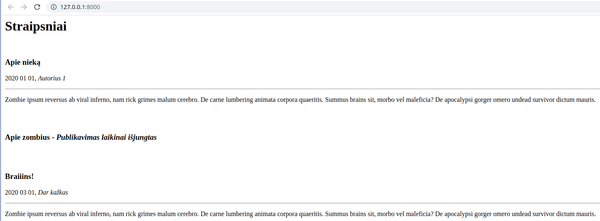

CodeAcademy Flask
Table of Contents
- 1. Įžanga į Flask
- 1.1. Kaip sukurti minimalią svetainę:
- 1.2. Kaip puslapyje atvaizduoti įvestą kintamąjį:
- 1.3. Kaip sukurti ir panaudoti HTML šabloną:
- 1.4. Kaip kintamuosius perkelti į šabloną:
- 1.5. Kaip perduoti duomenis iš svetainės į programą:
- 1.6. Naudojame base.html šabloną:
- 1.7. Stiliui panaudojame "Bootstrap":
- 1.8. Užduotys
- 2. Flask 1 dalis
- 3. Flask 2 dalis
- 4. Flask 3 dalis
- 5. Flask 4 dalis
- 6. REST API kūrimas su Flask
- 7. Vartotojų registravimas ir prisijungimas
- 8. Nuotraukos pridėjimas, admin puslapis, puslapiavimas
- 9. Slaptažodžio keitimas ir klaidų puslapiai
- 10. Diegimas į serverį
1 Įžanga į Flask
Flask yra populiariausias Python microframework. Jeigu projektas nėra labai didelis, arba tiesiog norime pasidaryti kažkokį GUI per naršyklę, kažką greitai prototipuoti, Flask yra labai geras pasirinkimas. Su flask yra pakankamai paprasta kurti API's. Ši paskaita bus greita įžanga, kitose nagrinėsime išsamiau.
Flask galima įdiegti su pip naudojant pip install flask.
1.1 Kaip sukurti minimalią svetainę:
from flask import Flask app = Flask(__name__) @app.route("/") def home(): return "<h1>Čia mano naujas puslapis</h1>" if __name__ == "__main__": app.run(debug=True):
1.2 Kaip puslapyje atvaizduoti įvestą kintamąjį:
from flask import Flask app = Flask(__name__) @app.route("/<name>") def user(name): return f"Labas, {name}" if __name__ == "__main__": app.run()
1.3 Kaip sukurti ir panaudoti HTML šabloną:
main.py:
from flask import Flask, render_template app = Flask(__name__) @app.route("/") def user(): return render_template("index.html") if __name__ == "__main__": app.run()
templates/index.html:
<!DOCTYPE html> <html lang="en"> <head> <meta charset="UTF-8"> <title>Mano Puslapis</title> </head> <body> <h1>Labas, pasauli!</h1> </body> </html>
Įdėkime į šabloną šiek tiek logikos:
<!DOCTYPE html> <html lang="en"> <head> <meta charset="UTF-8"> <title>Skaičiavimai</title> </head> <body> <h1>Skaičiavimai: </h1> {%for x in range(10)%} {%if x % 2 == 0 %} <p>{{x}}</p> {% endif %} {%endfor%} </body> </html>
1.4 Kaip kintamuosius perkelti į šabloną:
main.py
from flask import Flask, render_template app = Flask(__name__) @app.route("/") def home(): vardai = ['Jonas', 'Antanas', 'Petras'] return render_template("index.html", sarasas=vardai) if __name__ == "__main__": app.run()
templates/index.html
<!DOCTYPE html> <html lang="en"> <head> <meta charset="UTF-8"> <title>Sarašas</title> </head> <body> <h1>Žmonių sarašas: </h1> {%for vardas in sarasas%} <p>{{vardas}}</p> {% endfor %} </body> </html>
1.5 Kaip perduoti duomenis iš svetainės į programą:
main.py
from flask import Flask, request, render_template app = Flask(__name__) @app.route("/login", methods=['GET', 'POST']) def login(): if request.method == "POST": vardas = request.form['vardas'] return render_template("greetings.html", vardas=vardas) else: return render_template("login.html") if __name__ == "__main__": app.run()
templates/index.html
<!DOCTYPE html> <html lang="en"> <head> <meta charset="UTF-8"> <title>Prisijungimas</title> </head> <body> <form action="#" method="post"> <p>Vardas:</p> <p><input type="text" name="vardas"/></p> <p><input type="submit" value="submit"/></p> </form> </body> </html>
templates/greetings.html
<!DOCTYPE html> <html lang="en"> <head> <meta charset="UTF-8"> <title>Sveikiname</title> </head> <body> <h1>{{vardas}}, sveikiname prisijungus!</h1> </body> </html>
1.6 Naudojame base.html šabloną:
Failas templates/base.html:
<!DOCTYPE html> <html lang="en"> <head> <title>Mano puslapis</title> </head> <body> <div> <h1>Sveiki,</h1> <p>Čia yra mano super puslapis!</p> </div> <div class="container"> {% block content %}{% endblock %} </div> <body> </html>
Failas templates/login.html:
{% extends "base.html" %}
{% block content %}
<form action="#" method="post">
<p>Vardas:</p>
<p><input type="text" name="vardas"/></p>
<p><input type="submit" value="submit"/></p>
</form>
{% endblock %}
Failas templates/greetings.html:
{% extends "base.html" %}
{% block content %}
<h1>{{vardas}}, sveikiname prisijungus!</h1>
{% endblock %}
1.7 Stiliui panaudojame "Bootstrap":
Faile base.html:
<!DOCTYPE html> <html lang="en"> <head> <title>Mano puslapis</title> <meta charset="utf-8"> <meta name="viewport" content="width=device-width, initial-scale=1"> <link rel="stylesheet" href="https://maxcdn.bootstrapcdn.com/bootstrap/4.5.0/css/bootstrap.min.css"> <script src="https://ajax.googleapis.com/ajax/libs/jquery/3.5.1/jquery.min.js"></script> <script src="https://cdnjs.cloudflare.com/ajax/libs/popper.js/1.16.0/umd/popper.min.js"></script> <script src="https://maxcdn.bootstrapcdn.com/bootstrap/4.5.0/js/bootstrap.min.js"></script> </head> <body> <!-- Navigation --> <nav class="navbar navbar-expand-lg navbar-light bg-light static-top mb-5 shadow"> <div class="container"> <a class="navbar-brand" href="#"> Mano puslapis</a> <button class="navbar-toggler" type="button" data-toggle="collapse" data-target="#navbarResponsive" aria-controls="navbarResponsive" aria-expanded="false" aria-label="Toggle navigation"> <span class="navbar-toggler-icon"></span> </button> <div class="collapse navbar-collapse" id="navbarResponsive"> <ul class="navbar-nav ml-auto"> <li class="nav-item"> <a class="nav-link" href="/login">Prisijungti</a> </li> </ul> </div> </div> </nav> <div class="jumbotron text-center"> <h1>Sveiki,</h1> <p>Čia yra mano super puslapis!</p> </div> <div class="container"> {% block content %}{% endblock %} </div> </body> </html>
1.8 Užduotys
1.8.1 1 užduotis
Sukurti programą, kuri turėtų statinį puslapį, pvz. localhost:5000 su norimu tekstu (rekomenduojama naudoti šablonus)
main.py
from flask import Flask, render_template app = Flask(__name__) @app.route("/") def home(): return render_template("home.html") if __name__ == "__main__": app.run(debug=True)
template/home.html
<!DOCTYPE html> <html lang="en"> <head> <meta charset="UTF-8"> <title>Labas</title> </head> <body> <h1>Norimas tekstas</h1> </body> </html>

1.8.2 2 užduotis
Sukurti programą, kuri įvedus norimą žodį adreso eilutėje (po / simbolio) ir paspaudus ENTER, atspausdintų jį penkis kartus.
Still not sure where this is useful.
main.py
from flask import Flask, render_template app = Flask(__name__) @app.route("/<word>") def word(word): return render_template("word.html", word = word) if __name__ == "__main__": app.run(debug=True)
templates/word.html
<!DOCTYPE html> <html lang="en"> <head> <meta charset="UTF-8"> <title>Žodžiai</title> </head> <body> {% for x in range(5) %} {{word}} {% endfor %} </body> </html>

1.8.3 3 užduotis
Sukurti programą, kuri puslapyje localhost:5000/keliamieji parodytų visus keliamuosius metus nuo 1900 iki 2100 metų.
Cool use of calendar.
main.py
from flask import Flask, render_template import calendar app = Flask(__name__) @app.route("/keliamieji") def leap(): return render_template("leap.html", calendar = calendar) if __name__ == "__main__": app.run(debug=True)
templates/leap.html
<!DOCTYPE html> <html lang="en"> <head> <meta charset="UTF-8"> <title>Leap</title> </head> <body> {% for year in range(1900, 2100) %} {% if calendar.isleap(year) %} {{year}} {% endif %} {% endfor %} </body> </html>

1.8.4 4 užduotis
Sukurti programą, kuri leistų įvesti metus ir paspaudus patvirtinimo mygtuką parodytų, ar jie yra keliamieji.
main.py
from flask import Flask, render_template, request import calendar app = Flask(__name__) @app.route("/") def home(): return "<h1>Labas, cia yra pradinis</h1><p>Paziurek kas slepiasi po http://localhost:5000/arkeliamieji</p>" @app.route("/arkeliamieji", methods=["GET", "POST"]) def isleap(): if request.method == "GET": return render_template("getyear.html") elif request.method == "POST": year = request.form["year"] return render_template("isleap.html", year=int(year), calendar=calendar) if __name__ == "__main__": app.run(debug=True)
templates/getyear.html
<!DOCTYPE html> <html lang="en"> <head> <meta charset="UTF-8"> <title>Get Year</title> </head> <body> <form action="#" method="post"> <p>Metai:</p> <p><input type="text" name="year"/></p> <p><input type="submit" value="Patikrinti"/></p> </form> </body> </html>
templates/isleap.html
<!DOCTYPE html> <html lang="en"> <head> <meta charset="UTF-8"> <title>Is Leap</title> </head> <body> {% if calendar.isleap(year) %} <p>Keliamieji</p> {% else %} <p>Nekeliamieji</p> {% endif %} </body> </html>

1.8.5 5 užduotis (papildomai)
Patobulinti anksčiau kurtą biudžeto programą, panaudojant Flask (bendravimui su vartotoju) ir SQLAlchemy (darbui su duomenų baze, kurioje bus saugomi pajamų ir išlaidų įrašai).
Run db.py file first to create a database:
db.py
import datetime import os from sqlalchemy import Column, Integer, String, Float, DateTime, create_engine from sqlalchemy.ext.declarative import declarative_base engine = create_engine("sqlite:///.db") Base = declarative_base() class Projektas(Base): __tablename__ = "Projektas" id = Column(Integer, primary_key=True) name = Column("Pavadinimas", String) price = Column("Kaina", Float) created_date = Column("Sukūrimo data", DateTime, default=datetime.datetime.utcnow) # aprasom taip pat kaip paprasta klase. Asocijuojam su klase. Kad zinotu i kuri collumn deti kintamaji # created_date matai neidetas apacioje, nes nereikia jo mum patiem irasyti, jis turi default reiksme # jeigu noretum irasyti ir keisti - tuomet prie init turetum prirasyti def __init__(self, name, price): self.name = name self.price = price # Kada kvieciam klase su query, kad ja israsytu ir KAIP israsytu apibudinam cia def __repr__(self): return f"{self.id} {self.name} - {self.price}: {self.created_date}" # kviecia connectiona ir sukuria visas lenteles jeigu jos neegzistuoja. Jos neupdeitins. Base.metadata.create_all(engine)
main.py
import os from flask import Flask, request, render_template, url_for, redirect from flask_sqlalchemy import SQLAlchemy if __name__ == "__main__": from models.irasas import Irasas basedir = os.path.abspath(os.path.dirname(__file__)) app = Flask(__name__) app.config["SQLALCHEMY_DATABASE_URI"] = "sqlite:///" + os.path.join(basedir, "biudzetas.db") app.config["SQLALCHEMY_TRACK_MODIFICATIONS"] = False db = SQLAlchemy(app) db.create_all() @app.route("/prideti", methods=["GET", "POST"]) def prideti(): if request.method == "POST": suma = request.form["suma"] info = request.form["info"] irasas = Irasas(suma, info) db.session.add(irasas) db.session.commit() return sarasas() elif request.method == "GET": return render_template("prideti.html") @app.route("/") def sarasas(): biudzetas = Irasas.query.all() return render_template("sarasas.html", biudzetas=biudzetas) @app.route("/balansas") def balansas(): biudzetas = db.session.query(Irasas).all() balansas = 0 for irasas in biudzetas: balansas += irasas.suma return render_template("balansas.html", balansas=balansas) @app.route("/irasas_delete/<int:id>") def irasas_delete(id): uzklausa = db.session.query(Irasas).get(id) db.session.delete(uzklausa) db.session.commit() return redirect(url_for("sarasas")) @app.route("/irasas_update/<int:id>", methods=["GET", "POST"]) def irasas_update(id): if request.method == "POST": irasas = db.session.query(Irasas).get(id) irasas.suma = request.form["suma"] irasas.info = request.form["info"] db.session.commit() return redirect(url_for("sarasas")) elif request.method == "GET": irasas = db.session.query(Irasas).get(id) return render_template("redaguoti.html", irasas=irasas) if __name__ == "__main__": app.run(debug=True)
models/irasas.py
from main import db class Irasas(db.Model): __tablename__ = "Irasas" id = db.Column(db.Integer, primary_key=True) suma = db.Column("Suma", db.Float) info = db.Column("Info", db.String(120)) def __init__(self, suma, info): self.suma = suma self.info = info def __repr__(self): return f"{self.id}: suma - {self.suma}, info - {self.info}" db.create_all()
templates/balansas.html
{% extends "base.html" %}
{% block content %}
<h1>Balansas: </h1>
<p>{{balansas}}</p>
{% endblock %}
templates/prideti.html
{% extends "base.html" %}
{% block content %}
<form action="#" method="post">
<p>Suma:</p>
<p><input type="text" name="suma"/></p>
<p>Info:</p>
<p><input type="text" name="info"/></p>
<p><input type="submit" value="Įvesti"/></p>
</form>
{% endblock %}
templates/redaguoti.html
{% extends "base.html" %}
{% block content %}
<form action="#" method="post">
<p>Suma:</p>
<p><input type="text" name="suma" value={{irasas.suma}} /></p>
<p>Info:</p>
<p><input type="text" name="info" value={{irasas.info}} /></p>
<p><input type="submit" value="Įvesti"/></p>
</form>
{% endblock %}>
templates/sarasas.html
{% extends "base.html" %}
{% block content %}
<h1>Biudžeto įrašai: </h1>
{%for irasas in biudzetas%}
<p>{{irasas}}</p>
<a href="{{ url_for('irasas_delete', id=irasas['id']) }}">Ištrinti</a>
<a href="{{ url_for('irasas_update', id=irasas['id']) }}">Redaguoti</a>
<hr>
{% endfor %}
{% endblock %}
templates/base.html
<!DOCTYPE html> <html lang="en"> <head> <title>Mano biudžetas</title> <meta charset="utf-8"> <meta name="viewport" content="width=device-width, initial-scale=1"> <link rel="stylesheet" href="https://maxcdn.bootstrapcdn.com/bootstrap/4.5.0/css/bootstrap.min.css"> <script src="https://ajax.googleapis.com/ajax/libs/jquery/3.5.1/jquery.min.js"></script> <script src="https://cdnjs.cloudflare.com/ajax/libs/popper.js/1.16.0/umd/popper.min.js"></script> <script src="https://maxcdn.bootstrapcdn.com/bootstrap/4.5.0/js/bootstrap.min.js"></script> </head> <body> <!-- Navigation --> <nav class="navbar navbar-expand-lg navbar-light bg-light static-top mb-5 shadow"> <div class="container"> <a class="navbar-brand" href="#"> <svg width="1em" height="1em" viewBox="0 0 16 16" class="bi bi-cash" fill="currentColor" xmlns="http://www.w3.org/2000/svg"> <path fill-rule="evenodd" d="M15 4H1v8h14V4zM1 3a1 1 0 0 0-1 1v8a1 1 0 0 0 1 1h14a1 1 0 0 0 1-1V4a1 1 0 0 0-1-1H1z"/> <path d="M13 4a2 2 0 0 0 2 2V4h-2zM3 4a2 2 0 0 1-2 2V4h2zm10 8a2 2 0 0 1 2-2v2h-2zM3 12a2 2 0 0 0-2-2v2h2zm7-4a2 2 0 1 1-4 0 2 2 0 0 1 4 0z"/> </svg> Mano biudžetas</a> <button class="navbar-toggler" type="button" data-toggle="collapse" data-target="#navbarResponsive" aria-controls="navbarResponsive" aria-expanded="false" aria-label="Toggle navigation"> <span class="navbar-toggler-icon"></span> </button> <div class="collapse navbar-collapse" id="navbarResponsive"> <ul class="navbar-nav ml-auto"> <li class="nav-item"> <a class="nav-link" href="/">Sąrašas</a> </li> <li class="nav-item"> <a class="nav-link" href="/balansas">Balansas</a> </li> <li class="nav-item"> <a class="nav-link" href="/prideti">Pridėti</a> </li> </ul> </div> </div> </nav> <div class="container"> {% block content %}{% endblock %} </div> </body> </html>
Run main.py and open http://127.0.0.1:5000, see the magic :)

Important notes!!
Jeigu norite paleistį šį projektą savo kompiuteryje, prieš tai įsitikinkite, jog turite šiam projektui reikiamą flask_sqlalchemy v2.5.1 versiją.
Tai galite padaryti savo virtualioje, šiam projektui skirtoje python aplinkoje. Terminale tiesiog paleiskite šią komandą, kad įrašyti reikiamą flask-sqlalchemy versiją:
pip install flask-sqlalchemy==2.5.1
Arba galite pasinaudoti requirements.txt. failiuku ir vos tik parsisiuntus šį branch į savo kompiuterį ir pasiruošus virtualią aplinką, susirašyti visas šiam projektui būtinas "dependencies" su šia komanda:
pip install -r requirements.txt
requirements.txt
click==8.1.3 Flask==2.2.2 Flask-SQLAlchemy==2.5.1 greenlet==2.0.1 importlib-metadata==6.0.0 itsdangerous==2.1.2 Jinja2==3.1.2 MarkupSafe==2.1.2 SQLAlchemy==1.4.46 Werkzeug==2.2.2 zipp==3.11.0
2 Flask 1 dalis
2.1 Susikurkime paprastą flask aplikaciją
app.py:
from flask import Flask, render_template # iš flask bibliotekos importuojame klasę Flask ir f-ją render_template. app = Flask(__name__) # inicijuojame klasės Flask objektą, priskiriame kintamąjam app. @app.route('/') # įvelkame f-ją į flask dekoratorių. Be jo funkcija būtų bereikšmė. Dekorato riaus parametruose nurodome, kad norėsime rezultato 127.0.0.1:8000/ url adrese.""" def index(): return render_template('index.html') # funkcijoje index nurodome, kad norėsime sugeneruoti index.html if __name__ == '__main__': app.run(host='127.0.0.1', port=8000, debug=True) # patikrinę, ar programa leidžiama ne iš kito failo, leidžiame mūsų app, su parametrais. debug = True klaidos atveju mums rodys informatyvias žinutes naršyklėje.
Komentaruose šiek tiek informacijos, kas vyksta. Dabar mums reikės susikurti html šabloną. Flask šablonų ieško templates kataloge. :
<!DOCTYPE html> <html lang="en"> <head> <meta charset="UTF-8"> <meta name="viewport" content="width=device-width, initial-scale=1.0"> <meta http-equiv="X-UA-Compatible" content="ie=edge"> <title>Demo</title> </head> <body> <h1>Flask Flask Flask</h1> </body> </html>
Patikrinkime, ar veikia:
Logikos naudojimas šablonuose:
Už logiką šablonuose atsako Jinja2 šablonų generatorius (templating engine), jis per savo sintaksę leidžia mums įterpti kintamuosius ir logiką į html failus.
paruoškime paprastą žodynų sąrašą, kuris galės būti mūsų duomenų bazės imitacija:
dictionary.py:
data =[{ 'data':'2020 01 01', 'autorius': 'Autorius 1', 'pavadinimas': 'Apie nieką', 'tekstas': 'Zombie ipsum reversus ab viral inferno, nam rick grimes malum cerebro. De carne lumbering animata corpora quaeritis. Summus brains sit, morbo vel maleficia? De apocalypsi gorger omero undead survivor dictum mauris.' }, { 'data':'2020 02 01', 'autorius': 'KITAS AUTORIUS', 'pavadinimas': 'Apie zombius', 'tekstas': 'Zombie ipsum reversus ab viral inferno, nam rick grimes malum cerebro. De carne lumbering animata corpora quaeritis. Summus brains sit, morbo vel maleficia? De apocalypsi gorger omero undead survivor dictum mauris. ' }, { 'data':'2020 03 01', 'autorius': 'Dar kažkas', 'pavadinimas': 'Braiiins!', 'tekstas': 'Zombie ipsum reversus ab viral inferno, nam rick grimes malum cerebro. De carne lumbering animata corpora quaeritis. Summus brains sit, morbo vel maleficia? De apocalypsi gorger omero undead survivor dictum mauris.' }]
Pagrindiniame faile importuokime šį kintamąjį ir perduokime į šabloną:
app.py:
from flask import Flask, render_template from dictionary import data # IMPORTUOJAME app = Flask(__name__) @app.route('/') def index(): return render_template('index.html', data=data) # PERDUODAME Į ŠABLONĄ if __name__ == '__main__': app.run(host='127.0.0.1', port=8000, debug=True)
Dabar dirbsime su šablonu. Pradžiai tiesiog perduokime kintamąjį į body:
<body> <h1>Straipsniai:</h1> {{ data }} </body>

Čia yra grubus žodynų sąrašo perdavimas, jį ir matome. Pabandykime tai paversti straipsnių puslapiu:
<body> <h1>Straipsniai</h1> <br><br> {% for straipsnis in data %} <h3>{{ straipsnis['pavadinimas'] }}</h3> <p>{{ straipsnis['data'] }}, {{ straipsnis['autorius'] }}</p> <hr> <p>{{ straipsnis['tekstas'] }}</p> <hr> {% endfor %} </body>

Matome, kaip galime iteruoti per duomenis html'e. Pamėginkime įtraukti if logiką. Pradžiai papildykime 'duomenų bazę'. Kiekviename žodyne įtraukime 'status'. Dalies statusas bus 'published', dalies 'unpublished':
{ 'data':'2020 01 01', 'autorius': 'Autorius 1', 'pavadinimas': 'Apie nieką', 'tekstas': 'Zombie ipsum reversus ab viral inferno, nam rick grimes malum cerebro. De carne lumbering animata corpora quaeritis. Summus brains sit, morbo vel maleficia? De apocalypsi gorger omero undead survivor dictum mauris.', 'status': 'published' }, # ir t.t.
įtraukime if logiką į šabloną:
<body> <h1>Straipsniai</h1> <br> {% for straipsnis in data %} {% if straipsnis['status'] == 'published' %} <h3>{{ straipsnis['pavadinimas'] }}</h3> <p>{{ straipsnis['data'] }}, <i>{{ straipsnis['autorius'] }}</i></p> <hr> <p>{{ straipsnis['tekstas'] }}</p> <br><br> {% endif %} {% endfor %} </body>

Matome, kad straipsnis su statusu != 'published' nebuvo publikuotas. Kaip ir python'e, galima naudoti {%elif %} ir {% else %}. Pvz.:
<body> <h1>Straipsniai</h1> <br> {% for straipsnis in data %} {% if straipsnis['status'] == 'published' %} <h3>{{ straipsnis['pavadinimas'] }}</h3> <p>{{ straipsnis['data'] }}, <i>{{ straipsnis['autorius'] }}</i></p> <hr> <p>{{ straipsnis['tekstas'] }}</p> <br><br> {% else %} <h3>{{ straipsnis['pavadinimas'] }} - <i>Publikavimas laikinai išjungtas</i></h3> <br><br> {% endif %} {% endfor %} </body>

Paveldėjimas šablonuose
Dažniausiai interneto svetainės turi struktūrą, kai kiekviename puslapyje atsikartoja tam tikri komponentai. Tai gali būti titulinė puslapio dalis, <head> komponentai, navigacijos panelė, footer'is, nuorodos į CSS, JavaScript ir pan. Jinja2 turi mechanizmą, leidžiantį mums kiekvieną kartą nerašyti į šabloną šių komponentų, t.y. išsaugoti juos atskirai ir naudoti tik nuorodas į juos. Pabandykime pritaikyti praktikoje.
Pasiskolinkime standartinį išdėstymą iš čia.
Tam, kad veiktų mobiliosios versijos navigacija, data-toggle ir data-target reikia pakeisti data-bs-toggle ir data-bs-target.
Nusikopijuokime nuorodos HTML'ą į kokį nors html failą.
Pakeiskime lokalias css ir JavaScript nuorodas į Bootstrap CDN
Perkelkime savo <body> dalį vietoje tos dalies, kuri yra po komentaru <!– Page Content –>
senąjį failą pervadinkime backup.html, naująjį - index html.
Rezultatas atrodys maždaug taip:

Įsivaizduokime, kad mums reikės dar puslapio 'apie', galbūt dar keleto puslapių ateityje. Visi jie turės tą patį bootstrap'ą, ir tą pačią navigacijos panelę.
templates kataloge susikurkime failą base.html
visą turinį iš index.html nukopijuokime į naują base.html.
tuomet viską kas yra <div class="container"> viduje, triname ir pakeičiame į {% block content %}{% endblock %}:
</ul> </div> </div> </nav> <!-- Page Content --> <body> <div class="container"> {% block content %} {% endblock %} </div> </body> <!-- Bootstrap core JavaScript --> <script src="https://code.jquery.com/jquery-3.3.1.slim.min.js" integrity="sha384-q8i/X+965DzO0rT7abK41JStQIAqVgRVzpbzo5smXKp4YfRvH+8abtTE1Pi6jizo" crossorigin="anonymous"></script>
Išsaugokime base.html.
index.html pertvarkykime taip:
{% extends "base.html" %}
{% block content %}
<h1>Straipsniai</h1>
<br>
{% for straipsnis in data %}
{% if straipsnis['status'] == 'published' %}
<h3>{{ straipsnis['pavadinimas'] }}</h3>
<p>{{ straipsnis['data'] }}, <i>{{ straipsnis['autorius'] }}</i></p>
<hr>
<p>{{ straipsnis['tekstas'] }}</p>
<br><br>
{% else %}
<h3>{{ straipsnis['pavadinimas'] }} - <i>Publikavimas laikinai išjungtas</i></h3>
<br><br>
{% endif %}
{% endfor %}
{% endblock %}
papildykime savo app.py nauju maršrutu:
@app.route('/about') def about(): return render_template('about.html')
base.html susiraskime navigacijoje nuorodą 'About', ir nukreipkime į savo naująjį maršrutą:
<li class="nav-item"> <a class="nav-link" href="/about">About</a> </li> susikurkime dar vieną šabloną, about.html: {% extends "base.html" %} {% block content %} <h1>Apie</h1> <p>Šiame puslapyje rasite labai daug naudingos informacijos apie beveik viską</p> {% endblock %}
Svetainėje, paspaudę nuorodą atsidursime puslapyje "Apie":

3 Flask 2 dalis
3.1 Dinaminiai maršrutai ir formos
3.1.1 Dinaminiai maršrutai
Tęskime su praeitos paskaitos medžiaga. Įsivaizduokime, kad mums reikės straipsnių sąrašo, su dalimi teksto, ir po kiekvienu sąrašo elementu nuorodos 'skaityti toliau…'. Tokiose situacijose labai praverčia dinaminiai maršrutai. Susikurkime naują maršrutą app.py:
@app.route('/<string:title>') # parametruose nurodomas kintamasis (title) ir jo tipas (string) def article(title): # kintam1jį būtinai nurodykite ir funkcijos parametruose return render_template('article.html', title=title, data=data) # taip pat ir čia reikia jį perduoti
dabar pakoreguokime mūsų index.html:
{% extends "base.html" %}
{% block content %}
<h1>Straipsniai</h1>
<br>
{% for straipsnis in data %}
<h3>{{ straipsnis['pavadinimas'] }}</h3>
<p>{{ straipsnis['data'] }}, <i>{{ straipsnis['autorius'] }}</i></p>
<hr>
<p>{{ straipsnis['tekstas'][:30] }}<a href="{{ url_for('article', title=straipsnis['pavadinimas']) }}">...skaityti toliau</a></p>
<br><br>
{% endfor %}
{% endblock %}
panagrinėkime <p> bloką.
- {{ straipsnis['tekstas'][:30] }} - vietoje pilno teksto pasiliekame ištrauką pirmų 30ties simbolių
- nuorodoje naudojama url_for() yra pagalbinė Jinja funkcija. Į parametrus priima maršruto funkcijos pavadinimą. Paprastesniu atveju, url_for('about') nukreiptų į mūsų 'Apie' puslapį.
- {{ url_for('article', title=straipsnis['pavadinimas']) }} - šiuo atveju mes nurodėme, kad norime į 'article' ir kad jo parametruose esantis title būtų prilygintas straipsnio pavadinimui.
Mūsų straipsnių puslapis dabar atrodo taip:

Susikurkime tuščią article.html ir pažiūrėkime, kas vyksta:
article.html tuščias, todėl nėra jokio turinio. Tačiau URL eilutėje matome, kad puslaio endpoint'as yra straipsnio pavadinimas. Padarykime taip, kad matytumėm straipsnio turinį
article.html:
{% extends "base.html" %} {% block content %} {% for straipsnis in data %} {% if straipsnis['pavadinimas'] == title %} <h1>{{ straipsnis['pavadinimas'] }}</h1> <p>{{ straipsnis['data'] }}, <i>{{ straipsnis['autorius'] }}</i></p> <hr> <p>{{ straipsnis['tekstas'] }}</p> <br><br> {% endif %} {% endfor %} {% endblock %}
išbandykime:

3.1.2 Formos
Formas flaske galima kurti dviem būdais. Aptarsime abu. Pirmas iš jų būtų paprastos formos iš HTML duomenų surinkimas. Tinka įvairiems testavimams, ne kritiniams duomenims apdoroti. Veikimo principas buvo glaustai pademonstruotas įžangos skyriuje. Žinoma, tas formas galima privesti iki profesionalaus lygmens, tačiau reikės nemažai papildomo darbo.
sukurkime naują maršrutą:
@app.route('/add_article') def add_article(): return render_template('add_article.html')
papildykime index.html nuoroda po straipsniais "Rašyti straipsnį"
{% extends "base.html" %}
{% block content %}
<h1>Straipsniai</h1>
<br>
{% for straipsnis in data %}
<h3>{{ straipsnis['pavadinimas'] }}</h3>
<p>{{ straipsnis['data'] }}, <i>{{ straipsnis['autorius'] }}</i></p>
<hr>
<p>{{ straipsnis['tekstas'][:30] }}<a href="{{ url_for('article', title=straipsnis['pavadinimas']) }}">...skaityti toliau</a></p>
<br><br>
{% endfor %}
<h1><a href="{{ url_for('add_article') }}"> Rašyti straipsnį</a></h1>
{% endblock %}
sukurkime naują šabloną add_article.html:
{% extends "base.html" %}
{% block content %}
<form action="/", method="post">
<div class="form-group">
<label for="autorius">Autorius</label>
<input type="text" class="form-control" id="autorius" name="autorius">
</div>
<div class="form-group">
<label for="pavadinimas">Pavadinimas</label>
<input type="text" class="form-control" id="pavadinimas" name="pavadinimas">
</div>
<div class="form-group">
<label for="date">Data</label>
<input type="text" class="form-control" id="date" name="date">
</div>
<div class="form-group">
<label for="tekstas">Example textarea</label>
<textarea class="form-control" id="tekstas" name="tekstas" rows="3"></textarea>
</div>
<button type="submit" class="btn btn-primary">Išsaugoti</button>
</form>
{% endblock %}
užeikime į "Rašyti straipsnį" nuorodą:

Turime neveikiančią formą.
Prie importų iš flask pridėkime request. Pakoreguokime index()
funkciją:
@app.route('/', methods=['GET', 'POST']) def index(): if request.method == 'POST': date = request.form['date'] autorius = request.form['autorius'] tekstas = request.form['tekstas'] pavadinimas = request.form['pavadinimas'] data.append({ 'data': date, 'autorius': autorius, 'pavadinimas': pavadinimas, 'tekstas': tekstas, 'status': 'published' }) return render_template('index.html', data=data)
funkcijoje pasitikriname, ar yra 'post' užklausa, jeigu yra, tai papildome mūsų "duomenų bazę" naujais duomenimis:

3.1.3 flask-wtf
Antras būdas tvarkytis su formomis yra trečios šalies bibliotekos
flask_wtf naudojimas. Ji pasirūpina saugumo klausimais "out of the
box" ir yra industrijos standartas dirbant su flask. Pamėginsime
kontaktuose sukurti paprastą formą. Reikia šiek tiek pasiruošti:
- sukurkime naują tuščią maršrutą contact_us
- sukurkime naują tuščią šabloną tam maršrutui
- navigacijoje aktyvuokime nuorodą į contact_us
- sukurkime naują failą forms.py
- įsidiekime flask-wtf biblioteką (pip install flask-wtf)
forms.py:
from flask_wtf import FlaskForm from wtforms import StringField, TextAreaField, SubmitField from wtforms.validators import DataRequired, Length, Email class ContactForm(FlaskForm): name = StringField('Vardas', [DataRequired()]) email = StringField('El.paštas', [Email(message=('Neteisingas adresas.')), DataRequired()]) body = TextAreaField('Jūsų pranešimas', [DataRequired(), Length(min=10, message=('Per trumpas tekstas.'))]) submit = SubmitField('Submit')
Šį kartą mūsų forma aprašoma, kaip klasė. Visus laukų tipus ir validatorius (patvirtintojus?..) reikia importuotis atskirai. Pvz.: eilutę priskirtą kintamąjam body galima dekonstruoti taip:
TextAreaField - nurodome, kokio tipo formos lauką generuoti.
'Jūsų pranešimas' - formos lauko pavadinimas (label).
[DataRequired(), Length(min=10, message=('Per trumpas tekstas.'))]) - sąraše yra validators - Nurodome kad laukas būtinas užpildyti, kad minimum 10 simbolių, ir kokia klaidos žinutė.
Kokie yra galimi laukai, galima pažiūrėti čia. Kokie yra galimi validators, galima pažiūrėti čia.
pakoreguokime maršrutą:
@app.route('/contact_us', methods=['GET', 'POST']) def contact_us(): form = ContactForm() if form.validate_on_submit(): return render_template('contact_success.html', form=form) return render_template('contact_us.html', form=form)
Pakoregavome contact_us maršrutą taip, kad jeigu forma sėkmingai praėjo validaciją, nukreiptų mus į sėkmės puslapį.
pasidarykime šablonus - contact_us.html:
{% extends "base.html" %}
{% block content %}
<form method="post" action="{{ url_for('contact_success') }}">
{{ form.hidden_tag() }}
<div class="form-group">
{{ form.name.label(class="form-control-label") }}
{{ form.name(class="form-control") }}
</div>
<div class="form-group">
{{ form.email.label(class="form-control-label") }}
{{ form.email(class="form-control") }}
</div>
<div class="form-group">
{{ form.body.label(class="form-control-label") }}
{{ form.body(class="form-control", rows="5") }}
</div>
{{ form.submit }}
</form>
{% endblock %}
reikėtų atkreipti dėmesį, kad Bootstrap klasės rašomos į kintamųjų parametrus
ir sėkmės puslapiui - contact_success.html
{% extends "base.html" %}
{% block content %}
<h1>Forma užpildyta sėkmingai!</h1>
<p>Vardas: {{form.name.data}}</p>
<p>El. paštas: {{form.email.data}}</p>
<p>Tekstas:</p>
<p>{{form.body.data}}</p>
{% endblock %}
kadangi apie duomenų bazes kalbėsime sekančioje paskaitoje, su šiuo labai nesistengėme, išgaudysime formos reikšmes į pliką HTML.

paspaudus 'Submit' mygtuką, mes niekur nenukreipiami, nes forma nepraėjo validacijos filtrų. Būtų gerai, jeigu mus informuotų, kas atsitiko. Reikia koreguoti formos šabloną:
{% extends "base.html" %}
{% block content %}
<form method="post" action="#">
{{ form.csrf_token }}
<div class="form-group">
{{ form.name.label(class="form-control-label") }}
{{ form.name(class="form-control") }}
{% if form.name.errors %}
{% for error in form.name.errors %}
<small><font color="red">{{ error }}</font></small>
{% endfor %}
{% endif %}
</div>
<div class="form-group">
{{ form.email.label(class="form-control-label") }}
{{ form.email(class="form-control") }}
{% if form.email.errors %}
{% for error in form.email.errors %}
<small><font color="red">{{ error }}</font></small>
{% endfor %}
{% endif %}
</div>
<div class="form-group">
{{ form.body.label(class="form-control-label") }}
{{ form.body(class="form-control", rows="5") }}
{% if form.body.errors %}
{% for error in form.body.errors %}
<small><font color="red">{{ error }}</font></small>
{% endfor %}
{% endif %}
</div>
{{ form.submit }}
</form>
{% endblock %}
Atrodo painiai :) Tai tik po kiekvienu lauku nurodyta sąlyga, kad jeigu tam laukui yra kažkokios klaidos, praiteruojame jas, ir parašome, kas tai per klaida:
Na ir pagaliau pabandykime teisingai suvesti:

3.2 Uzduotis
3.2.1 app.py
from flask import Flask, render_template, request, redirect, url_for, flash from form import ContactForm app = Flask(__name__) app.config['SECRET_KEY'] = 'bet kokia simbolių eilutė' @app.route('/', methods=['GET', 'POST']) def form(): form = ContactForm() if form.validate_on_submit(): return render_template('success.html', form=form) return render_template('form.html', form=form) if __name__ == '__main__': app.run(host='127.0.0.1', port=8000, debug=True)
3.2.2 form.py
from flask_wtf import FlaskForm from wtforms import StringField, PasswordField, SelectField, SubmitField, BooleanField from wtforms.validators import DataRequired, Length, Email, InputRequired class ContactForm(FlaskForm): email = StringField('Vardas', [Email(message=('Neteisingas adresas.')), DataRequired(message='Lauką būtina užpildyti')]) password = PasswordField('Slaptažodis', validators=[Length(min=8, message=('Per mažai simbolių!')), DataRequired(message='Lauką būtina užpildyti')]) address1 = StringField('Adresas (pirma eilutė)', validators=[DataRequired(message=('Lauką būtina užpildyti')), Length(min=4, message=('Per mažai simbolių!'))]) address2 = StringField('Adresas (antra eilutė)', validators=[Length(min=4, message=('Per mažai simbolių'))]) city = StringField('Miestas', validators=[DataRequired(message='Lauką būtina užpildyti'), Length(min=4, message=('Per mažai simbolių'))]) state = SelectField('Rajonas', choices=[('vln', 'Vilniaus'), ('kns', 'Kauno'), ('klp', 'Klaipėdos')], validators=[DataRequired(message='Lauką būtina užpildyti')]) zip_code = StringField('Pašto kodas', validators=[DataRequired(message='Lauką būtina užpildyti'), Length(min=4, message=('Per mažai simbolių'))]) agree = BooleanField('Sutinku gauti šlamštą') submit = SubmitField('Submit')
3.2.3 templates/base.html
<!doctype html> <html lang="en"> <head> <!-- Required meta tags --> <meta charset="utf-8"> <meta name="viewport" content="width=device-width, initial-scale=1, shrink-to-fit=no"> <!-- Bootstrap CSS --> <link rel="stylesheet" href="https://stackpath.bootstrapcdn.com/bootstrap/4.4.1/css/bootstrap.min.css" integrity="sha384-Vkoo8x4CGsO3+Hhxv8T/Q5PaXtkKtu6ug5TOeNV6gBiFeWPGFN9MuhOf23Q9Ifjh" crossorigin="anonymous"> <title>Superform</title> </head> <body> <br> <div class="container"> {% block content %} {% endblock %} </div> <!-- Optional JavaScript --> <!-- jQuery first, then Popper.js, then Bootstrap JS --> <script src="https://code.jquery.com/jquery-3.4.1.slim.min.js" integrity="sha384-J6qa4849blE2+poT4WnyKhv5vZF5SrPo0iEjwBvKU7imGFAV0wwj1yYfoRSJoZ+n" crossorigin="anonymous"></script> <script src="https://cdn.jsdelivr.net/npm/popper.js@1.16.0/dist/umd/popper.min.js" integrity="sha384-Q6E9RHvbIyZFJoft+2mJbHaEWldlvI9IOYy5n3zV9zzTtmI3UksdQRVvoxMfooAo" crossorigin="anonymous"></script> <script src="https://stackpath.bootstrapcdn.com/bootstrap/4.4.1/js/bootstrap.min.js" integrity="sha384-wfSDF2E50Y2D1uUdj0O3uMBJnjuUD4Ih7YwaYd1iqfktj0Uod8GCExl3Og8ifwB6" crossorigin="anonymous"></script> </body> </html>
3.2.4 templates/form.html
{% extends "base.html" %}
{% block content %}
<form method="post" action="#">
{{ form.csrf_token }}
<div class="form-row">
<div class="form-group col-md-6">
{{ form.email.label(class="form-control-label") }}
{{ form.email(class="form-control") }}
{% if form.email.errors %}
{% for error in form.email.errors %}
<small><font color="red">{{ error }}</font></small>
{% endfor %}
{% endif %}
</div>
<div class="form-group col-md-6">
{{ form.password.label(class="form-control-label") }}
{{ form.password(class="form-control") }}
{% if form.password.errors %}
{% for error in form.password.errors %}
<small><font color="red">{{ error }}</font></small>
{% endfor %}
{% endif %}
</div>
</div>
<div class="form-group">
{{ form.address1.label(class="form-control-label") }}
{{ form.address1(class="form-control") }}
{% if form.address1.errors %}
{% for error in form.address1.errors %}
<small><font color="red">{{ error }}</font></small>
{% endfor %}
{% endif %}
</div>
<div class="form-group">
{{ form.address2.label(class="form-control-label") }}
{{ form.address2(class="form-control") }}
{% if form.address2.errors %}
{% for error in form.address2.errors %}
<small><font color="red">{{ error }}</font></small>
{% endfor %}
{% endif %}
</div>
<div class="form-row">
<div class="form-group col-md-6">
{{ form.city.label(class="form-control-label") }}
{{ form.city(class="form-control") }}
{% if form.city.errors %}
{% for error in form.city.errors %}
<small><font color="red">{{ error }}</font></small>
{% endfor %}
{% endif %}
</div>
<div class="form-group col-md-4">
{{ form.state.label(class="form-control-label") }}
{{ form.state(class="form-control") }}
{% if form.state.errors %}
{% for error in form.state.errors %}
<small><font color="red">{{ error }}</font></small>
{% endfor %}
{% endif %}
</div>
<div class="form-group col-md-2">
{{ form.zip_code.label(class="form-control-label") }}
{{ form.zip_code(class="form-control") }}
{% if form.zip_code.errors %}
{% for error in form.zip_code.errors %}
<small><font color="red">{{ error }}</font></small>
{% endfor %}
{% endif %}
</div>
</div>
<div class="form-check">
{{ form.agree(class="form-check-input") }}
{{ form.agree.label(class="form-check-label") }}
{% if form.agree.errors %}
{% for error in form.agree.errors %}
<small><font color="red">{{ error }}</font></small>
{% endfor %}
{% endif %}
</div>
<br>
{{ form.submit }}
</form>
{% endblock %}
3.2.5 templates/success.html
{% extends "base.html" %}
{% block content %}
<h1>Forma užpildyta sėkmingai!</h1><br><br>
<p>Email: {{form.email.data}}</p>
<p>Password: {{form.password.data}}</p>
<p>Adresas:</p>
<p>{{form.address1.data}}</p>
<p>{{form.address2.data}}</p>
<p>{{form.zip_code.data}} {{form.city.data}}</p>
<p>{{form.state.data}} raj.</p>
<p>{{form.agree.data}}</p>
{% endblock %}
4 Flask 3 dalis
once again, do pip install flask-sqlalchemy==2.5.1
we will use this, not the current +3 version for some of the projects listed below to work.
4.1 Duomenų bazės sukūrimas
Flask leidžia mums dirbti su duomenų bazėmis, praktiškai nesitepant rankų su SQL užklausomis. Viskuo pasirūpina modulis Flask-SQLAlchemy. Iš principo tai yra SQLAlchemy, optimizuota Flask'ui. Ją galima įdiegti naudojant pip install Flask-SQLAlchemy komandą.
Susikurkime pirmą duomenų bazę:
import os from flask import Flask from flask_sqlalchemy import SQLAlchemy basedir = os.path.abspath(os.path.dirname(__file__)) # pilnas kelias iki šio failo. app = Flask(__name__) app.app_context().push() app.config['SQLALCHEMY_DATABASE_URI'] = 'sqlite:///'+os.path.join(basedir, 'data.sqlite') # nustatėme, kad mūsų duomenų bazė bus šalia šio failo esants data.sqlite failas app.config['SQLALCHEMY_TRACK_MODIFICATIONS'] = False # neseksime kiekvienos modifikacijos db = SQLAlchemy(app) # sukuriame duomenų bazės objektą # sukurkime modelį užklausos formai, kuris sukurs duomenų bazėje lentelę class Message(db.Model): # DB lentelei priskiria pavadinimą, jei nenurodysite, priskirs automatiškai pagal klasės pavadinimą. __tablename__ = 'messages' id = db.Column(db.Integer, primary_key=True) # stulpelis, kurio reikšmės integer. Taip pat jis bus primary_key. name = db.Column(db.String(80), nullable=False) email = db.Column(db.String(120), unique=True, nullable=False) message = db.Column(db.Text, nullable=False) def __init__(self, name, email, message): self.name = name self.email = email self.message = message def __repr__(self): return f'{self.name} - {self.email}'
class Message yra aprašyta mūsų duomenų bazės lentelė. Paleidus šį failą, duomenų bazė nesusikurs, reikia inicijuoti šį veiksmą iš išorės (per konsolę arba kitą Python script'ą). Susikurkime dar vieną Python failą:
from app import db, Message db.create_all() # sukurs mūsų lentelę DB # Iš karto inicijuosime testams keletą įrašų: jonas = Message('Jonas', 'jonas@mail.com', 'Kažkoks labai rimtas atsiliepimas.') antanas = Message('Antanas', 'antanas@mail.lt', 'Antano nuomonė labai svarbi.') juozas = Message('Juozas', 'juozukas@friends.lt', 'Aš labai piktas, nes blogai.') bronius = Message('Bronius', 'bronka@yahoo.com', 'Aš tai linksmas esu, man patinka.') # Pridėsime šiuos veikėjus į mūsų DB db.session.add_all([jonas, antanas, juozas, bronius]) # .commit išsaugo pakeitimus db.session.commit() print(jonas.id) print(antanas.id) print(bronius.id) print(juozas.id) # 1 # 2 # 4 # 3
.create_all() įrašė lentelę į DB, inicijuoti testiniai duomenys taip pat sėkmingai nukeliavo į lentelę, atsispausdinome jų ID, kurie buvo sugeneruoti automatiškai.
4.1.1 Paprastos CRUD operacijos
Susikurkime dar vieną failą, crud operacijų demonstracijai. Atsispausdinkime visus lentelėje esančius objektus:
from app import db, Message all_messages = Message.query.all() print(all_messages) # [Jonas - jonas@mail.com, Antanas - antanas@mail.lt, Juozas - juozukas@friends.lt, Bronius - bronka@yahoo.com]
Atsispausdinkime vieną iš objektų:
message_1 = Message.query.get(1) print(message_1) # Jonas - jonas@mail.com
Išfiltruokime objektą pagal nurodytą požymį:
message_antanas = Message.query.filter_by(name='Antanas') print(message_antanas.all()) # [Antanas - antanas@mail.lt]
filter_by išrinks mums visus įrašus, kuriuose name='Antanas'
Pakeiskime Antano el. paštą:
antanas = Message.query.get(2) antanas.email = 'geras.zmogus@lrs.lt' db.session.add(antanas) db.session.commit() print(Message.query.all()) # [Jonas - jonas@mail.com, Antanas - geras.zmogus@lrs.lt, Juozas - juozukas@friends.lt, Bronius - bronka@yahoo.com]
Ištrinkime Joną:
jonas = Message.query.get(1) db.session.delete(jonas) db.session.commit() print(Message.query.all()) # [Antanas - geras.zmogus@lrs.lt, Juozas - juozukas@friends.lt, Bronius - bronka@yahoo.com]
4.2 Duomenų bazės migracija
Jeigu mums prireiktų papildyti savo lentelę papildomu stulpeliu, tiesiog papildžius klasę Message nauja eilute mums nepavyktų, kadangi duomenų bazė jau inicijuota tokia, kokią nurodėme pirmą kartą. Tą reikia turėti omenyje, kas kartą, kuriant duomenų bazę stengtis pasidaryti ją kuo išbaigtesnę. Tuomet ateityje, norint ją papildyti naujais stulpeliais, ar pakeisti esamų nustatymus, reikės mažiau migracijos procesų. Susitvarkykime savo projektą taip, kad galėtumėm vykdyti migracijas:
nustatykime FLASK-APP aplinkos kintamąjį (environment variable). Tą reikės padaryti Windows komandinėje eilutėje, arba Linux/MacOS terminale:
windows - set FLASK_APP=failas_kuriame_musu_db_modelis.py
linux/macOS - export FLASK_APP=failas_kuriame_musu_db_modelis.py
įsitikinkite, kad komandą leidžiate iš to paties katalogo, kuriame failas su jūsų DB modeliu.
įdiekime Flask-Migrate paketą (pip install Flask-Migrate)
pertvarkykime savo .py failą:
import os from flask import Flask from flask_sqlalchemy import SQLAlchemy from flask_migrate import Migrate # importuojame migracijas basedir = os.path.abspath(os.path.dirname(__file__)) app = Flask(__name__) app.config['SQLALCHEMY_DATABASE_URI'] = 'sqlite:///'+os.path.join(basedir, 'data.sqlite') app.config['SQLALCHEMY_TRACK_MODIFICATIONS'] = False db = SQLAlchemy(app) Migrate(app, db) # Susiejame app ir db. class Message(db.Model): __tablename__ = 'messages' id = db.Column(db.Integer, primary_key=True) name = db.Column(db.String(80), nullable=False) email = db.Column(db.String(120), unique=True, nullable=False) phone = db.Column(db.String(40), unique=True) # Papildome duomenų bazės modelį nauju stulpeliu. message = db.Column(db.Text, nullable=False) # prie konstruktoriaus irgi nepamirštame pridėti: def __init__(self, name, email, message, phone): self.name = name self.email = email self.message = message self.phone = phone def __repr__(self): return f'{self.name} - {self.email}'
Importus papildėme migracijos 'tarnyba':) Jai nurodėme, kokią aplikaciją susieti su kokia duomenų baze. Papildėme duomenų bazės modelį nauju stulpeliu (phone).
Inicijuokime migracijas mūsų projektui su komanda flask db init:
(flask-kursui) robotautas@robotautas-MS-7A34:~/Dropbox/Flask 3 dalis/Code$ flask db init Creating directory /home/robotautas/Dropbox/Flask 3 dalis/Code/migrations ... done Creating directory /home/robotautas/Dropbox/Flask 3 dalis/Code/migrations/versions ... done Generating /home/robotautas/Dropbox/Flask 3 dalis/Code/migrations/alembic.ini ... done Generating /home/robotautas/Dropbox/Flask 3 dalis/Code/migrations/README ... done Generating /home/robotautas/Dropbox/Flask 3 dalis/Code/migrations/env.py ... done Generating /home/robotautas/Dropbox/Flask 3 dalis/Code/migrations/script.py.mako ... done Please edit configuration/connection/logging settings in '/home/robotautas/Dropbox/Flask 3 dalis/Code/migrations/alembic.ini' before proceeding. (flask-kursui) robotautas@robotautas-MS-7A34:~/Dropbox/Flask 3 dalis/Code$ ls app.py data.sqlite migrations __pycache__ setupdb.py simple_crud.py test.py
matome, kad sukurtas migracijų katalogas. Dabar paruoškime savo pirmą
migraciją, flask db migrate -m "žinutė atminčiai":
(jei tai darome pakartotinai ir matome klaidą "ERROR [flask_migrate] Error: Target database is not up to date.", reikės prieš tai paleisti "flask db stamp head")
(flask-kursui) robotautas@robotautas-MS-7A34:~/Dropbox/Flask 3 dalis/Code$ flask db migrate -m "pridėtas stulpelis phone" INFO [alembic.runtime.migration] Context impl SQLiteImpl. INFO [alembic.runtime.migration] Will assume non-transactional DDL. INFO [alembic.autogenerate.compare] Detected added column 'messages.phone' INFO [alembic.autogenerate.compare] Detected added unique constraint 'None' on '['phone']' Generating /home/robotautas/Dropbox/Flask 3 dalis/Code/migrations/versions/d31d8cda085d_pridėtas_stulpelis_phone.py ... done
matome, kad aptikti pakeitimai. Dabar įvykdykime pačią migraciją,
flask db upgrade:
(flask-kursui) robotautas@robotautas-MS-7A34:~/Dropbox/Flask 3 dalis/Code$ flask db upgrade INFO [alembic.runtime.migration] Context impl SQLiteImpl. INFO [alembic.runtime.migration] Will assume non-transactional DDL. INFO [alembic.runtime.migration] Running upgrade -> d31d8cda085d, pridėtas stulpelis phone ERROR [root] Error: No support for ALTER of constraints in SQLite dialect # klaidelę galime ignoruoti, ne visiškas dialekto palaikymas..
patikrinkime, ar suveikė:
messages = Message.query.all() for i in messages: random_phone = randint(999999, 10000000) i.phone = str(random_phone) db.session.add(i) db.session.commit() for x in messages: print (f'{x.id}, {x.name}, {x.email}, {x.phone}, {x.message}') # 2, Antanas, geras.zmogus@lrs.lt, 9033639, Antano nuomonė labai svarbi. # 3, Juozas, juozukas@friends.lt, 2233484, Aš labai piktas, nes blogai. # 4, Bronius, bronka@yahoo.com, 4211290, Aš tai linksmas esu, man patinka.
Jeigu atkreipėte dėmesį, migracijų procesas labai panašus į GIT procesus.
4.3 Uzduotis
Sukurkite peticijos puslapį. Gali pažiūrėti demonstraciją, kaip turėtų atrodyti galutinis rezultatas.
Šiame puslapyje turėtų būti išpildyti žemiau išvardinti reikalavimai:
Puslapio navigacijoje turi būti nuorodos į pagrindinį puslapį ir /about.
Pagrindiniame puslapyje turi būti forma, kurioje reikia įvesti vardą, pavardę ir komentarą. Po ja - pasirašiusiųjų sąrašas: eil.nr, vardas pavardė, data ir komentaras
Jeigu forma užpildyta sėkmingai, sąrašas papildomas paskutiniu įrašu, o vietoje formos atsiranda padėkos žinutė (angl. success message).
Įrašus saugokite sqlite duomenų bazėjė.
Jums reikės atrasti būdą, kaip prieš sugeneruojant šabloną į duomenų bazę perkelti formos duomenis
Pavienės wtf-formos reikšmės traukiamos taip, pvz: form.name.data
Padaryti formos validaciją (šitą galite pasilikti pabaigai ir padaryti, jeigu liks laiko)
# app.py import os from datetime import datetime from flask import Flask, render_template from flask_migrate import Migrate from flask_sqlalchemy import SQLAlchemy from form import MessageForm basedir = os.path.abspath(os.path.dirname(__file__)) app = Flask(__name__) app.config['SECRET_KEY'] = 'bet kokia simbolių eilutė' app.config['SQLALCHEMY_DATABASE_URI'] = 'sqlite:///'+os.path.join(basedir, 'data.sqlite') app.config['SQLALCHEMY_TRACK_MODIFICATIONS'] = False db = SQLAlchemy(app) Migrate(app, db) class Message(db.Model): __tablename__ = 'messages' id = db.Column(db.Integer, primary_key=True) fname = db.Column(db.String(80), nullable=False) lname = db.Column(db.String(80), nullable=False) date = db.Column(db.String(80)) comment = db.Column(db.Text, nullable=False) def __init__(self, fname, lname, comment, date): self.fname = fname self.lname = lname self.comment = comment self.date = date def __repr__(self): return f'{self.fname} - {self.lname}' @app.route('/', methods=['GET', 'POST']) def index(): data = Message.query.all()[::-1] form = MessageForm() if form.validate_on_submit(): fname = form.fname.data lname = form.lname.data comment = form.comment.data now = datetime.now() date = now.strftime("%d/%m/%Y %H:%M:%S") entry = Message(fname=fname, lname=lname, comment=comment, date=date) db.session.add(entry) db.session.commit() data = Message.query.all()[::-1] stats = 20000 - len(data) return render_template('index.html', form=False, data=data, stats = stats) return render_template('index.html', form=form, data=data) @app.route('/about') def about(): return render_template('about.html') if __name__ == '__main__': app.run(host='127.0.0.1', port=8000, debug=True)
# form.py from flask_wtf import FlaskForm from wtforms import StringField, TextAreaField, SubmitField from wtforms.validators import DataRequired class MessageForm(FlaskForm): fname = StringField('Vardas', [DataRequired()]) lname = StringField('Pavardė', [DataRequired()]) comment = TextAreaField('Komentaras') submit = SubmitField('Pasirašyti')
<!-- about.html --> {% extends "base.html" %} {% block content %} <img src="https://images2.minutemediacdn.com/image/upload/c_fill,g_auto,h_1248,w_2220/f_auto,q_auto,w_1100/v1555446335/shape/mentalfloss/istock_000019974211_small.jpg" /> <br> <p>Zombie ipsum reversus ab viral inferno, nam rick grimes malum cerebro. De carne lumbering animata corpora quaeritis. Summus brains sit, morbo vel maleficia? De apocalypsi gorger omero undead survivor dictum mauris. Hi mindless mortuis soulless creaturas, imo evil stalking monstra adventus resi dentevil vultus comedat cerebella viventium. Qui animated corpse, cricket bat max brucks terribilem incessu zomby. The voodoo sacerdos flesh eater, suscitat mortuos comedere carnem virus. Zonbi tattered for solum oculi eorum defunctis go lum cerebro. Nescio brains an Undead zombies. Sicut malus putrid voodoo horror. Nigh tofth eliv ingdead. </p> {% endblock %}
<!-- base.html --> <!DOCTYPE html> <html lang="en"> <head> <meta charset="utf-8"> <meta name="viewport" content="width=device-width, initial-scale=1, shrink-to-fit=no"> <meta name="description" content=""> <meta name="author" content=""> <title>Bare - Start Bootstrap Template</title> <!-- Bootstrap core CSS --> <link rel="stylesheet" href="https://stackpath.bootstrapcdn.com/bootstrap/4.1.3/css/bootstrap.min.css" integrity="sha384-MCw98/SFnGE8fJT3GXwEOngsV7Zt27NXFoaoApmYm81iuXoPkFOJwJ8ERdknLPMO" crossorigin="anonymous"> </head> <body> <!-- Navigation --> <nav class="navbar navbar-expand-lg navbar-dark bg-primary static-top"> <div class="container"> <a class="navbar-brand" href="/">Bebrų medžioklei NE!</a> <button class="navbar-toggler" type="button" data-toggle="collapse" data-target="#navbarResponsive" aria-controls="navbarResponsive" aria-expanded="false" aria-label="Toggle navigation"> <span class="navbar-toggler-icon"></span> </button> <div class="collapse navbar-collapse" id="navbarResponsive"> <ul class="navbar-nav ml-auto"> <li class="nav-item"> <a class="nav-link" href="/">Peticija</a> </li> <li class="nav-item"> <a class="nav-link" href="/about">Apie</a> </li> </ul> </div> </div> </nav> <!-- Page Content --> <div class="container"> <br> {% block content %} {% endblock %} </div> <!-- Bootstrap core JavaScript --> <script src="https://code.jquery.com/jquery-3.3.1.slim.min.js" integrity="sha384-q8i/X+965DzO0rT7abK41JStQIAqVgRVzpbzo5smXKp4YfRvH+8abtTE1Pi6jizo" crossorigin="anonymous"></script> <script src="https://cdnjs.cloudflare.com/ajax/libs/popper.js/1.14.3/umd/popper.min.js" integrity="sha384-ZMP7rVo3mIykV+2+9J3UJ46jBk0WLaUAdn689aCwoqbBJiSnjAK/l8WvCWPIPm49" crossorigin="anonymous"></script> <script src="https://stackpath.bootstrapcdn.com/bootstrap/4.1.3/js/bootstrap.min.js" integrity="sha384-ChfqqxuZUCnJSK3+MXmPNIyE6ZbWh2IMqE241rYiqJxyMiZ6OW/JmZQ5stwEULTy" crossorigin="anonymous"></script> </body> </html>
<!-- index.html --> {% extends "base.html" %} {% block content %} {% if form %} <h4>Mūsų šventas tikslas yra užkirsti kelią barbariškai bebrų medžioklei. Prašome pasirašyti peticiją!</h4> <br> <form method="post" action="#"> {{ form.hidden_tag() }} <div class="form-group"> {{ form.fname.label(class="form-control-label") }} {{ form.fname(class="form-control") }} </div> <div class="form-group"> {{ form.lname.label(class="form-control-label") }} {{ form.lname(class="form-control") }} </div> <div class="form-group"> {{ form.comment.label(class="form-control-label") }} {{ form.comment(class="form-control", rows="5") }} </div> {{ form.submit }} </form> {% else %} <h3>Ačiū, kad pasirašėte. Mums liko surinkti {{stats}} parašų!</h3> {% endif %} {% for i in data %} <hr> <p>{{i.id}}. {{i.fname}} {{i.lname}}, {{i.date}}</p> <p>{{i.comment}}</p> {% endfor %} {% endblock %}
5 Flask 4 dalis
5.1 One2Many
Dauguma programų turi po daugiau negu vieną duomenų bazės modelį. Įsivaizduokime, kad turime du modelius - knyga ir leidykla:
- Knyga
- ISBN (Primary Key)
- Autorius
- Pavadinimas
- Leidyklos ID (Foreign Key)
- Leidykla
- ID (Primary Key)
- Pavadinimas
- Adresas
Viena leidykla gali turėti daug knygų, pabandykime sumodeliuoti duomenų bazę šiam atvejui.
Susikurkime app.py:
import os from flask import Flask from flask_sqlalchemy import SQLAlchemy from flask_migrate import Migrate basedir = os.path.abspath(os.path.dirname(__file__)) app = Flask(__name__) app.app_context().push() app.config['SQLALCHEMY_DATABASE_URI'] = 'sqlite:///' + os.path.join(basedir, 'data.sqlite') app.config['SQLALCHEMY_TRACK_MODIFICATIONS'] = False db = SQLAlchemy(app) Migrate(app, db) ''' Klasėje Book mus domina publisher_id kintamasis. Jis susieja klasę Book su klase Publisher per ForeignKey, kuriame parametruose nurodytas kitos lentelės pavadinimas ir prie kurio lauko rišame, t.y. prie id, kuris publishers lentelėje yra primary_key. ''' class Book(db.Model): __tablename__ = 'books' id = db.Column(db.Integer, primary_key=True) author = db.Column(db.String(150)) title = db.Column(db.String(300)) publisher_id = db.Column(db.Integer, db.ForeignKey('publishers.id')) def __init__(self, author, title, publisher_id): self.author = author self.title = title self.publisher_id = publisher_id def __repr__(self): return self.title ''' Klasėje Publisher, atgalinį ryšį su Books klase sukuria books kintamąjam priskirta eilutė. Parametruose nurodyta klasė, su kuria siejame ir backref - kol kas žiūrėkite, kaip į papildomą saitą tarp python klasių. ''' class Publisher(db.Model): __tablename__ = 'publishers' id = db.Column(db.Integer, primary_key=True) name = db.Column(db.String(100), unique=True) books = db.relationship('Book', backref='publisher') def __init__(self, name): self.name = name def __repr__(self): return self.name
Sukūrėme du modelius, šiek tiek detalių rasite komentaruose. Išbandykime, ar veikia:
terminale -
- set FLASK_APP=app.py,
- flask db init,
- flask db migrate -m "pirma migracija",
- flask db upgrade.
šį kartą dirbsime iš python konsolės:
Python 3.7.3 (default, Mar 27 2019, 22:11:17) [GCC 7.3.0] :: Anaconda, Inc. on linux Type "help", "copyright", "credits" or "license" for more information. >>> from app import db, Book, Publisher >>> pub1 = Publisher('Baltos Lankos') >>> pub2 = Publisher('Alma Littera') >>> db.session.add_all([pub1, pub2]) >>> db.session.commit() >>> book1 = Book('Biliūnas', 'Kliudžiau', 1) >>> book2 = Book('Žemaitė', 'Marti', 1) >>> book3 = Book('Mažvydas', 'Katekizmas', 2) >>> db.session.add_all([book1, book2, book3]) >>> db.session.commit()
Susikūrėme bandomuosius duomenis. Patikrinkime, ar pavyko:
>>> books = Book.query.all() >>> books [Kliudžiau, Marti, Katekizmas] >>> pubs = Publisher.query.all() >>> pubs [Baltos Lankos, Alma Littera] >>> for i in books: ... print(i, i.publisher) ... Kliudžiau Baltos Lankos Marti Baltos Lankos Katekizmas Alma Littera >>> for i in pubs: ... print(i, i.books) ... Baltos Lankos [Kliudžiau, Marti] Alma Littera [Katekizmas] >>>
Matome, kad įrašai kuriasi, ryšiai veikia. Atkreipkite dėmesį, kai iteravome knygas, nurodėme spausdinti i.publisher, nors tokio stulpelio ir nėra. Tai reikšmė iš back reference parametro, galima ją taip naudoti.
5.2 Many2Many
Pasitaiko, kad knygos turi ne po vieną autorių. Gaunasi situacija, daug knygų - daug autorių. Pabandykime sumodeliuoti:
helper_table = db.Table('helper', db.Column('book_id', db.Integer, db.ForeignKey('books.id')), db.Column('author_id', db.Integer, db.ForeignKey('authors.id'))) class Book(db.Model): __tablename__ = 'books' id = db.Column(db.Integer, primary_key=True) title = db.Column(db.String(300)) publisher_id = db.Column(db.Integer, db.ForeignKey('publishers.id')) authors = db.relationship('Author', secondary=helper_table, backref='books') def __init__(self, title, publisher_id): self.title = title self.publisher_id = publisher_id def __repr__(self): return self.title class Publisher(db.Model): __tablename__ = 'publishers' id = db.Column(db.Integer, primary_key=True) name = db.Column(db.String(100), unique=True) books = db.relationship('Book', backref='publisher') def __init__(self, name): self.name = name def __repr__(self): return self.name class Author(db.Model): __tablename__ = 'authors' id = db.Column(db.Integer, primary_key=True) fname = db.Column(db.String(150)) lname = db.Column(db.String(300)) def __init__(self, fname, lname): self.fname = fname self.lname = lname def __repr__(self): return f'{self.fname} {self.lname}'
Pirmiausiai sukūrėme helper_table. Tai ne modelis, o tiesiog pagalbinė lentelė duomenų bazėje, apjungianti modelius Book ir Author.
Modelyje Books vietoje seno author, sukūrėme naują authors stulpelį. Nurodėme, kad kreipsimės į Author modelį, per pagalbinę lentelę. Nurodėme backref='books'. Per šio parametro reikšmę vėliau galėsime kreiptis iš autoriaus į knygos modelį.
Sukūrėme modelį Author. Jame jokiais ryšiais rūpintis nereikia, tai padaryta ankstesniuose punktuose.
Viską inicijavus, ir DB atidarius per duombazių administravimo programą (dbeaver), matome tokią schemą:

Patikrinimui suvedėme šiek tiek duomenų bandymams:
>>> books [Mūsų bendra knyga, Knyga apie gyvenimą, Kaip mes kartu tarnavome] >>> pubs [Baltos Lankos, Alma Littera] >>> authors [Valdas Adamkus, Algimantas Čekuolis, Andrius Mamontovas, Antanas Baranauskas]
Pažiūrėkime, kaip veikia many2many mechanizmas flask aplinkoje:
>>> bendra_knyga = Book.query.filter_by(title='Mūsų bendra knyga').first() >>> bendra_knyga Mūsų bendra knyga >>> v_adamkus = Author.query.filter_by(fname='Valdas').first() >>> v_adamkus Valdas Adamkus >>> a_chuck = Author.query.filter_by(fname = 'Algimantas').first() >>> a_chuck Algimantas Čekuolis >>> bendra_knyga.authors.append(v_adamkus) >>> bendra_knyga.authors.append(a_chuck) >>> bendra_knyga.authors [Valdas Adamkus, Algimantas Čekuolis]
Vienai knygai priskyrėme porą autorių. Pabandykime atvirkštinį veiksmą:
>>> knyga_ag = Book.query.filter_by(title='Knyga apie gyvenimą').first() >>> knyga_ag Knyga apie gyvenimą >>> knyga_tarnavome = Book.query.filter_by(title='Kaip mes kartu tarnavome').first() >>> knyga_tarnavome Kaip mes kartu tarnavome >>> a_chuck.books.append(knyga_tarnavome) >>> a_chuck.books.append(knyga_ag) >>> a_chuck.books [Mūsų bendra knyga, Knyga apie gyvenimą, Kaip mes kartu tarnavome]
Pavyko. Čekuolis parašė tris knygas, vieną iš kurių su bendraautoriumi :) Dar kartą akcentuosiu, kad iš Author į Book modelį kreipiamasi per backref, šiuo atveju 'books'.
Taip atrodo helper lentelė - tiesiog knygų ID sąsajos su autorių ID.
5.3 Many2One ryšio įgyvendinimas su Flask
Sqlalchemy dalis:
Vienas tėvas gali turėti vieną vaiką. Vaikas gali turėti kelis tėvus. Šiam ryšiui tėvo klasėje sukuriamas vaiko id (foreign key) ir vaiko objektas (relationship laukas). Iš vaiko pusės ryšio laukai nebūtini.
class Tevas(db.Model): __tablename__ = "tevas" id = db.Column(db.Integer, primary_key=True) vardas = db.Column("Vardas", db.String) pavarde = db.Column("Pavardė", db.String) vaikas_id = db.Column(db.Integer, db.ForeignKey("vaikas.id")) vaikas = db.relationship("Vaikas") class Vaikas(db.Model): __tablename__ = "vaikas" id = db.Column(db.Integer, primary_key=True) vardas = db.Column("Vardas", db.String) pavarde = db.Column("Pavardė", db.String)
Formos python failas:
Tam, kad tėvo formoje galėtume turėti pasirenkamą vaiko lauką, turime panaudoti QuerySelectField lauką. Atkreipkite dėmesį, kad jį reikia importuoti iš wtforms_sqlalchemy.fields, o ne wtforms. Štai ką reiškia šio lauko argumentai:
query_factory nurodome funkciją su gražinama vaikų užklausa (Vaikas.query, priekyje pridėtas app, nes importuotas visas app failas, kad pasiektume vaiko ir tėvo objektus).
allow_blank nustatome reikšmę True. Tai reiškia, kad tėvui leidžiama ir nepasirinkti jokio vaiko.
get_label nurodoma, kokį vaiko lauką norime matyti, pasirinkdami vaiką tėvo formoje.
get_pk nurodome, kad laukas pasiimtų vaiko id, kaip stringą. Tam parašome lambda funkciją (lambda obj: str(obj)). Čia galima naudoti ir paprastą funkciją.
from flask_wtf import FlaskForm from wtforms import StringField, SubmitField from wtforms.validators import DataRequired from wtforms_sqlalchemy.fields import QuerySelectField import app def vaikas_query(): return app.Vaikas.query class TevasForm(FlaskForm): vardas = StringField('Numeris', [DataRequired()]) pavarde = StringField('Pavardė', [DataRequired()]) vaikas = QuerySelectField(query_factory=vaikas_query, allow_blank=True, get_label="vardas", get_pk=lambda obj: str(obj)) submit = SubmitField('Įvesti') class VaikasForm(FlaskForm): vardas = StringField('Numeris', [DataRequired()]) pavarde = StringField('Pavardė', [DataRequired()]) submit = SubmitField('Įvesti')
Formos html failas:
Formos html failas praktiškai nesiskiria nuo įprasto neryšinio objekto įvedimo formos. Vaiko laukas įvedamas, kaip bet kuris kitas laukas. Jo logika pasiimama iš formos python failo ir vietoje įprasto įvedimo lauko, jis tampa pasirinkimų lauku.
{% extends "base.html" %}
{% block content %}
<form method="post" action="#">
{{ form.hidden_tag() }}
<div class="form-group">
{{ form.vardas.label(class="form-control-label") }}
{{ form.vardas(class="form-control") }}
</div>
<div class="form-group">
{{ form.pavarde.label(class="form-control-label") }}
{{ form.pavarde(class="form-control") }}
</div>
<div class="form-group">
{{ form.vaikas.label(class="form-control-label") }}
{{ form.vaikas(class="form-control") }}
</div>
{{ form.submit }}
</form>
{% endblock %}
Tėvų atvaizdavimo html kodas:
Kadangi tėvas gali turėti vaiką (laukas vaikas), kas tiesiog yra objektas, kiekvieną kartą tikriname, ar šis laukas užpildytas. Jei jis ne tuščias, atvaizduojame tėvui priskirto vaiko vardą (tevas.vaikas.vardas) ir pavardę (tevas.vaikas.pavarde).
Žemiau yra nuorodos į flask metodus, skirtus tėvo įrašo ištrynimui ir redagavimui, taip pat – naujo tėvo įvedimui.
{% extends "base.html" %}
{% block content %}
{% if visi_tevai %}
{% for tevas in visi_tevai %}
<hr>
<p>{{tevas.vardas}}</p>
<p>{{tevas.pavarde}}</p>
{% if tevas.vaikas %}
<p>Vaikas:</p>
<p>{{tevas.vaikas.vardas}} {{tevas.vaikas.pavarde}}</p>
{% endif %}
<a href="{{ url_for('delete', id=tevas['id']) }}">Ištrinti</a>
<a href="{{ url_for('update', id=tevas['id']) }}">Redaguoti</a>
{% endfor %}
{% endif %}
<hr>
<p><a href="{{ url_for('new_parent')}}">Naujas tėvas</a></p>
{% endblock %}
Flask funkcijos:
Tėvų atvaizdavimo:
@app.route("/tevai") def parents(): try: visi_tevai = Tevas.query.all() except: visi_tevai = [] return render_template("tevai.html", visi_tevai=visi_tevai)
Tėvų pridėjimo:
Dekoratoriuje aprašome, kad funkcija naudos ir GET ir POST metodus (duomenų priėjimui iš formos).
Funkcijos pradžioje inicijuojame duomenų bazę (db.create_all()). Tai reikalinga norint sukurti duomenų bazę, kai jos nėra.
Inicijuojamas tėvo formos objektas (forma = forms.TevasForm(), pradžioje rašoma forms, nes failo pradžioje yra importuota forms klasė).
Patvirtinus formą (if forma.validate_on_submit()), inicijuojamas tėvo objektas su duomenimis iš formos. Atkreipkite dėmesį, kad vaiko objektas priskiriamas ne tiesiogiai, o per vaikas_id lauką).
Tėvo objektas pridedamas į sesiją (db.session.add(naujas_tevas)) ir sesija išsaugoma (db.session.commit()).
Galiausiai nukreipiama į parents funkciją (return redirect(url_for('parents'))), kuri atidaro tėvų puslapį.
Pagrindinis (apatinis) return nukreipia į tėvo pridėjimo puslapį, pasiimdamas formos duomenis (render_template("prideti_teva.html", form=forma)).
@app.route("/naujas_tevas", methods=["GET", "POST"]) def new_parent(): db.create_all() forma = forms.TevasForm() if forma.validate_on_submit(): naujas_tevas = Tevas(vardas=forma.vardas.data, pavarde=forma.pavarde.data, vaikas_id=forma.vaikas.data.id) db.session.add(naujas_tevas) db.session.commit() return redirect(url_for('parents')) return render_template("prideti_teva.html", form=forma)
Pilnas kodas:
5.4 One2Many ryšio įgyvendinimas su Flask
Sqlalchemy dalis:
Vienas tėvas gali turėti daug vaikų. Vaikas gali turėti vieną tėvą (atvirkščiai, nei Many2one). Šiam ryšiui tėvo klasėje sukuriamas vaikų vaiko objektas (relationship laukas). Iš vaiko pusės sukuriamas tėvo id (foreign key) ir tėvo objektas (relationship laukas).
class Tevas(db.Model): __tablename__ = "tevas" id = db.Column(db.Integer, primary_key=True) vardas = db.Column("Vardas", db.String) pavarde = db.Column("Pavardė", db.String) vaikai = db.relationship("Vaikas") class Vaikas(db.Model): __tablename__ = "vaikas" id = db.Column(db.Integer, primary_key=True) vardas = db.Column("Vardas", db.String) pavarde = db.Column("Pavardė", db.String) tevas_id = db.Column(db.Integer, db.ForeignKey("tevas.id")) tevas = db.relationship("Tevas")p
Formos python failas:
Tam, kad tėvo formoje galėtume turėti pasirenkamą vaikų lauką, turime panaudoti QuerySelectMultipleField lauką (panašus, kaip Many2one atveju naudojamas QuerySelectField). Atkreipkite dėmesį, kad jį reikia importuoti iš wtforms_sqlalchemy.fields, o ne wtforms. Štai ką reiškia šio lauko argumentai:
query_factory nurodome visų vaikų užklausą (app.Vaikas.query.all, priekyje pridėtas app, nes importuotas visas app failas, kad pasiektume vaiko ir tėvo objektus).
get_label nurodoma, kokį vaiko lauką norime matyti, pasirinkdami vaiką tėvo formoje.
get_pk nurodome, kad laukas pasiimtų vaiko id, kaip stringą. Tam parašome lambda funkciją (lambda obj: str(obj)). Čia galima naudoti ir paprastą funkciją.
from flask_wtf import FlaskForm from wtforms import StringField, IntegerField, SubmitField, SelectField from wtforms.validators import DataRequired, Email, InputRequired from wtforms_sqlalchemy.fields import QuerySelectField, QuerySelectMultipleField import app class TevasForm(FlaskForm): vardas = StringField('Numeris', [DataRequired()]) pavarde = StringField('Pavardė', [DataRequired()]) vaikai = QuerySelectMultipleField(query_factory=app.Vaikas.query.all, get_label="vardas", get_pk=lambda obj: str(obj)) submit = SubmitField('Įvesti') class VaikasForm(FlaskForm): vardas = StringField('Numeris', [DataRequired()]) pavarde = StringField('Pavardė', [DataRequired()]) submit = SubmitField('Įvesti')
Formos html failas:
Formos html failas praktiškai nesiskiria nuo įprasto neryšinio objekto įvedimo formos. Vaikų laukas įvedamas, kaip bet kuris kitas laukas. Jo logika pasiimama iš formos python failo ir vietoje įprasto įvedimo lauko, jis tampa kelių pasirinkimų lauku (kelis variantus formoje galima pasirinkti laikant nuspaustą klaviatūros mygtuką CTRL).
{% extends "base.html" %}
{% block content %}
<form method="post" action="#">
{{ form.hidden_tag() }}
<div class="form-group">
{{ form.vardas.label(class="form-control-label") }}
{{ form.vardas(class="form-control") }}
</div>
<div class="form-group">
{{ form.pavarde.label(class="form-control-label") }}
{{ form.pavarde(class="form-control") }}
</div>
<div class="form-group">
{{ form.vaikai.label(class="form-control-label") }}
{{ form.vaikai(class="form-control") }}
</div>
{{ form.submit }}
</form>
{% endblock %}
Tėvų atvaizdavimo html kodas:
Kadangi tėvas gali daug vaikų (laukas vaikas), kas tiesiog yra objektai, kiekvieną kartą tikriname, ar šis laukas užpildytas. Jei jis ne tuščias, praiteruojame (prasukame for ciklą) per visus tėvo vaikus (per tėvo lauką vaikai tevas.vaikai) ir atvaizduojame kiekvieno vaiko vardą (vaikas.vardas) ir pavardę (vaikas.pavarde).
Žemiau yra nuorodos į flask metodus, skirtus tėvo įrašo ištrynimui ir redagavimui, taip pat – naujo tėvo įvedimui.
{% extends "base.html" %}
{% block content %}
{% if visi_tevai %}
{% for tevas in visi_tevai %}
<hr>
<p>{{tevas.vardas}}</p>
<p>{{tevas.pavarde}}</p>
{% if tevas.vaikai %}
<p>Vaikai:</p>
{% for vaikas in tevas.vaikai %}
<p>{{vaikas.vardas}} {{vaikas.pavarde}}</p>
{% endfor %}
{% endif %}
{% endfor %}
{% endif %}
<hr>
<p><a href="{{ url_for('new_parent')}}">Naujas tėvas</a></p>
{% endblock %}
Flask funkcijos:
Pradžioje truputį pakeičiama DB nuorodos nurodymo kodą. Tai reikalinga tam, kad nemestų thread klaidų:
app.config['SQLALCHEMY_DATABASE_URI'] = 'sqlite:///' + os.path.join(basedir, 'data.sqlite?check_same_thread=False')
Tėvų atvaizdavimo:
@app.route("/tevai") def parents(): try: visi_tevai = Tevas.query.all() except: visi_tevai = [] return render_template("tevai.html", visi_tevai=visi_tevai)
Tėvų pridėjimo:
Dekoratoriuje aprašome, kad funkcija naudos ir GET ir POST metodus (duomenų priėjimui iš formos).
Funkcijos pradžioje inicijuojame duomenų bazę (db.create_all()). Tai reikalinga norint sukurti duomenų bazę, kai jos nėra.
Inicijuojamas tėvo formos objektas (forma = forms.TevasForm(), pradžioje rašoma forms, nes failo pradžioje yra importuota forms klasė).
Patvirtinus formą (if forma.validate_on_submit()), inicijuojamas tėvo objektas su duomenimis iš formos. Kol kas vaikai nepriskiriami
Iteruojama per tėvo vaikus iš formos (forma.vaikai.data), padaromos kiekvieno vaiko užklausos iš duomenų bazės ir jie pridedami prie tėvo vaikų objektų sąrašo (per metodą append). Taip išvengiama sesijų susidubliavimo klaida.
Tėvo objektas pridedamas į sesiją (db.session.add(naujas_tevas)) ir sesija išsaugoma (db.session.commit()).
Galiausiai nukreipiama į parents funkciją (return redirect(url_for('parents'))), kuri atidaro tėvų puslapį.
Pagrindinis (apatinis) return nukreipia į tėvo pridėjimo puslapį, pasiimdamas formos duomenis (render_template("prideti_teva.html", form=forma)).
@app.route("/naujas_tevas", methods=["GET", "POST"]) def new_parent(): db.create_all() forma = forms.TevasForm() if forma.validate_on_submit(): naujas_tevas = Tevas(vardas=forma.vardas.data, pavarde=forma.pavarde.data) for vaikas in forma.vaikai.data: priskirtas_vaikas = Vaikas.query.get(vaikas.id) naujas_tevas.vaikai.append(priskirtas_vaikas) db.session.add(naujas_tevas) db.session.commit() return redirect(url_for('parents')) return render_template("prideti_teva.html", form=forma)
Pilnas kodas:
5.5 Many2Many ryšio įgyvendinimas su Flask
Sqlalchemy dalis:
Vienas tėvas gali turėti daug vaikų. Vaikas gali turėti daug tėvų. Šiam ryšiui tėvo ir vaiko klasėse atitinkamai sukuriami vaiko ir tėvo objektai (relationship laukai). Taip pat būtina tarpinė ryšių lentelė association_table, kurioje sukuriami tėvo ir vaiko id stulpeliai (foreign key).
association_table = db.Table('association', db.metadata, db.Column('tevas_id', db.Integer, db.ForeignKey('tevas.id')), db.Column('vaikas_id', db.Integer, db.ForeignKey('vaikas.id')) ) class Tevas(db.Model): __tablename__ = 'tevas' id = db.Column(db.Integer, primary_key=True) vardas = db.Column("Vardas", db.String) pavarde = db.Column("Pavardė", db.String) vaikai = db.relationship("Vaikas", secondary=association_table, back_populates="tevai") class Vaikas(db.Model): __tablename__ = 'vaikas' id = db.Column(db.Integer, primary_key=True) vardas = db.Column("Vardas", db.String) pavarde = db.Column("Pavardė", db.String) tevai = db.relationship("Tevas", secondary=association_table, back_populates="vaikai")
Formos python failas:
Viskas praktiškai taip pat, kaip ir One2many atveju. Tam, kad tėvo formoje galėtume turėti pasirenkamą vaikų lauką, turime panaudoti QuerySelectMultipleField lauką. Atkreipkite dėmesį, kad jį reikia importuoti iš wtforms_sqlalchemy.fields, o ne wtforms. Štai ką reiškia šio lauko argumentai:
query_factory nurodome visų vaikų užklausą (app.Vaikas.query.all, priekyje pridėtas app, nes importuotas visas app failas, kad pasiektume vaiko ir tėvo objektus).
get_label nurodoma, kokį vaiko lauką norime matyti, pasirinkdami vaiką tėvo formoje.
get_pk nurodome, kad laukas pasiimtų vaiko id, kaip stringą. Tam parašome lambda funkciją (lambda obj: str(obj)). Čia galima naudoti ir paprastą funkciją.
from flask_wtf import FlaskForm from wtforms import StringField, IntegerField, SubmitField, SelectField from wtforms.validators import DataRequired, Email, InputRequired from wtforms_sqlalchemy.fields import QuerySelectField, QuerySelectMultipleField import app class TevasForm(FlaskForm): vardas = StringField('Numeris', [DataRequired()]) pavarde = StringField('Pavardė', [DataRequired()]) vaikai = QuerySelectMultipleField(query_factory=app.Vaikas.query.all, get_label="vardas", get_pk=lambda obj: str(obj)) submit = SubmitField('Įvesti') class VaikasForm(FlaskForm): vardas = StringField('Numeris', [DataRequired()]) pavarde = StringField('Pavardė', [DataRequired()]) submit = SubmitField('Įvesti')
Formos html failas:
Viskas praktiškai taip pat, kaip ir One2many atveju. Formos html failas praktiškai nesiskiria nuo įprasto neryšinio objekto įvedimo formos. Vaikų laukas įvedamas, kaip bet kuris kitas laukas. Jo logika pasiimama iš formos python failo ir vietoje įprasto įvedimo lauko, jis tampa kelių pasirinkimų lauku (kelis variantus formoje galima pasirinkti laikant nuspaustą klaviatūros mygtuką CTRL).
{% extends "base.html" %}
{% block content %}
<form method="post" action="#">
{{ form.hidden_tag() }}
<div class="form-group">
{{ form.vardas.label(class="form-control-label") }}
{{ form.vardas(class="form-control") }}
</div>
<div class="form-group">
{{ form.pavarde.label(class="form-control-label") }}
{{ form.pavarde(class="form-control") }}
</div>
<div class="form-group">
{{ form.vaikai.label(class="form-control-label") }}
{{ form.vaikai(class="form-control") }}
</div>
{{ form.submit }}
</form>
{% endblock %}
Tėvų atvaizdavimo html kodas:
Viskas praktiškai taip pat, kaip ir One2many atveju. Kadangi tėvas gali daug vaikų (laukas vaikas), kas tiesiog yra objektai, kiekvieną kartą tikriname, ar šis laukas užpildytas. Jei jis ne tuščias, praiteruojame (prasukame for ciklą) per visus tėvo vaikus (per tėvo lauką vaikai tevas.vaikai) ir atvaizduojame kiekvieno vaiko vardą (vaikas.vardas) ir pavardę (vaikas.pavarde).
Žemiau yra nuorodos į flask metodus, skirtus tėvo įrašo ištrynimui ir redagavimui, taip pat – naujo tėvo įvedimui.
{% extends "base.html" %}
{% block content %}
{% if visi_tevai %}
{% for tevas in visi_tevai %}
<hr>
<p>{{tevas.vardas}}</p>
<p>{{tevas.pavarde}}</p>
{% if tevas.vaikai %}
<p>Vaikai:</p>
{% for vaikas in tevas.vaikai %}
<p>{{vaikas.vardas}} {{vaikas.pavarde}}</p>
{% endfor %}
{% endif %}
{% endfor %}
{% endif %}
<hr>
<p><a href="{{ url_for('new_parent')}}">Naujas tėvas</a></p>
{% endblock %}
Pradžioje truputį pakeičiama DB nuorodos nurodymo kodą. Tai reikalinga tam, kad nemestų thread klaidų:
app.config['SQLALCHEMY_DATABASE_URI'] = 'sqlite:///' + os.path.join(basedir, 'data.sqlite?check_same_thread=False')
Tėvų atvaizdavimo:
@app.route("/tevai") def parents(): try: visi_tevai = Tevas.query.all() except: visi_tevai = [] return render_template("tevai.html", visi_tevai=visi_tevai)
Tėvų pridėjimo:
Dekoratoriuje aprašome, kad funkcija naudos ir GET ir POST metodus (duomenų priėjimui iš formos).
Funkcijos pradžioje inicijuojame duomenų bazę (db.create_all()). Tai reikalinga norint sukurti duomenų bazę, kai jos nėra.
Inicijuojamas tėvo formos objektas (forma = forms.TevasForm(), pradžioje rašoma forms, nes failo pradžioje yra importuota forms klasė).
Patvirtinus formą (if forma.validate_on_submit()), inicijuojamas tėvo objektas su duomenimis iš formos. Kol kas vaikai nepriskiriami
Iteruojama per tėvo vaikus iš formos (forma.vaikai.data), padaromos kiekvieno vaiko užklausos iš duomenų bazės ir jie pridedami prie tėvo vaikų objektų sąrašo (per metodą append). Taip išvengiama sesijų susidubliavimo klaida.
Tėvo objektas pridedamas į sesiją (db.session.add(naujas_tevas)) ir sesija išsaugoma (db.session.commit()).
Galiausiai nukreipiama į parents funkciją (return redirect(url_for('parents'))), kuri atidaro tėvų puslapį.
Pagrindinis (apatinis) return nukreipia į tėvo pridėjimo puslapį, pasiimdamas formos duomenis (render_template("prideti_teva.html", form=forma)).
@app.route("/naujas_tevas", methods=["GET", "POST"]) def new_parent(): db.create_all() forma = forms.TevasForm() if forma.validate_on_submit(): naujas_tevas = Tevas(vardas=forma.vardas.data, pavarde=forma.pavarde.data) for vaikas in forma.vaikai.data: priskirtas_vaikas = Vaikas.query.get(vaikas.id) naujas_tevas.vaikai.append(priskirtas_vaikas) db.session.add(naujas_tevas) db.session.commit() return redirect(url_for('parents')) return render_template("prideti_teva.html", form=forma)
Pilnas kodas:
5.5.1 Užduotis
Sukurti Flask programą, kuri leistų išsaugoti studentus, dėstytojus ir paskaitas
Kiekvienam dėstytojui leistų priskirti jo paskaitas (one2many ryšys)
Kiekvienam studentui leistų priskirti daug paskaitų (many2many ryšys)

Atsakymas
6 REST API kūrimas su Flask
6.1 REST API su Flask
6.1.1 REST API kūrimo kodas
from flask import Flask, jsonify, request from calendar import isleap app = Flask(__name__) @app.route("/", methods=['GET', 'POST']) def index(): if (request.method == 'POST'): some_json = request.get_json() return jsonify({'you sent': some_json}) else: return jsonify({'about': 'Hello World'}) @app.route("/keliamieji/<int:metai>", methods=['GET']) def keliamieji(metai): if isleap(metai): return jsonify({'result': "Keliamieji"}) else: return jsonify({'result': "NE Keliamieji"}) if __name__ == '__main__': app.run()
6.1.2 REST API kūrimo kodas (antras būdas panaudojant flask_restful)
from flask import Flask, request from flask_restful import Resource, Api from calendar import isleap app = Flask(__name__) api = Api(app) class HelloWorld(Resource): def get(self): return{'about' :'Hello world!'} def post(self): some_json = request.get_json() return {'you sent': some_json}, 201 class Keliamieji(Resource): def get(self, metai): if isleap(metai): return {'result': "Keliamieji"} else: return {'result': "NE Keliamieji"} api.add_resource(HelloWorld, '/') api.add_resource(Keliamieji, '/keliamieji/<int:metai>') if __name__ == '__main__': app.run(debug=True)
6.1.3 Sukurto REST API panaudojimo kodas
Šis kodas iliustruoja, kaip galėtume panaudoti API iš kitos Python programos. Tačiau taip pat, galite prasitestuoti ir su Postman ar alternatyviu įrankiu.
import requests import json payload = {'vardas': 'Donatas', 'pavarde': 'Noreika', 'amzius': 2000} r = requests.post('http://127.0.0.1:5000/', json=payload) dictionary = json.loads(r.text) print(dictionary) # {'you sent': {'amzius': 2000, 'pavarde': 'Noreika', 'vardas': 'Donatas'}} import requests import json r2 = requests.get('http://127.0.0.1:5000/keliamieji/2100') dictionary2 = json.loads(r2.text) print(dictionary2['result']) # NE Keliamieji
6.2 REST API su duomenų baze kūrimas
from flask import Flask, request, jsonify from flask_sqlalchemy import SQLAlchemy from flask_marshmallow import Marshmallow import os basedir = os.path.abspath(os.path.dirname(__file__)) app = Flask(__name__) app.config['SQLALCHEMY_DATABASE_URI'] = 'sqlite:///' + os.path.join(basedir, 'to_do.db') app.config['SQLALCHEMY_TRACK_MODIFICATIONS'] = False db = SQLAlchemy(app) ma = Marshmallow(app) # DB objektas class Uzduotis(db.Model): __tablename__ = 'uzduotis' id = db.Column(db.Integer, primary_key=True) pavadinimas = db.Column("Pavadinimas", db.String) atlikta = db.Column("Atlikta", db.Boolean) # Užduoties schema class UzduotisSchema(ma.Schema): class Meta: fields = ('id', 'pavadinimas', 'atlikta') uzduotis_schema = UzduotisSchema() uzduotys_schema = UzduotisSchema(many=True) # Crud @app.route('/uzduotis', methods=['POST']) def prideti_uzduoti(): db.create_all() pavadinimas = request.json['pavadinimas'] atlikta = request.json['atlikta'] nauja_uzduotis = Uzduotis(pavadinimas=pavadinimas, atlikta=atlikta) db.session.add(nauja_uzduotis) db.session.commit() return uzduotis_schema.jsonify(nauja_uzduotis) # cRud @app.route('/uzduotis', methods=['GET']) def gauti_visas_uzduotis(): visos_uzduotys = Uzduotis.query.all() rezultatas = uzduotys_schema.dump(visos_uzduotys) return jsonify(rezultatas) # cRud @app.route('/uzduotis/<id>', methods=['GET']) def gauti_uzduoti(id): uzduotis = Uzduotis.query.get(id) return uzduotis_schema.jsonify(uzduotis) # crUd @app.route('/uzduotis/<id>', methods=['PUT']) def pakeisti_uzduoti(id): uzduotis = Uzduotis.query.get(id) uzduotis.pavadinimas = request.json['pavadinimas'] uzduotis.atlikta = request.json['atlikta'] db.session.commit() return uzduotis_schema.jsonify(uzduotis) # cruD @app.route('/uzduotis/<id>', methods=['DELETE']) def istrinti_uzduoti(id): uzduotis = Uzduotis.query.get(id) db.session.delete(uzduotis) db.session.commit() return uzduotis_schema.jsonify(uzduotis) if __name__ == '__main__': app.run(host='127.0.0.1', port=8000, debug=True) db.create_all()
6.2.1 Traukiame duomenis iš API su DB
Įrašome užduotį:
nauja_uzduotis = { "pavadinimas": "Išplauti indus", "atlikta": False } r = requests.post('http://127.0.0.1:8000/uzduotis', json=nauja_uzduotis) print(json.loads(r.text))
Nuskaitome visas užduotis:
r = requests.get('http://127.0.0.1:8000/uzduotis') print(json.loads(r.text))
Nuskaitome vieną užduotį:
r = requests.get('http://127.0.0.1:8000/uzduotis/2') print(json.loads(r.text))
Pakeičiame vieną užduotį:
nauja_uzduotis = { "pavadinimas": "Išplauti grindis", "atlikta": False } r = requests.put('http://127.0.0.1:8000/uzduotis/2', json=nauja_uzduotis) print(json.loads(r.text))
Ištriname užduotį:
r = requests.delete('http://127.0.0.1:8000/uzduotis/1') print(json.loads(r.text))
6.3 Užduotis: Flask API
Sukurti Flask API programą, kuri:
Per API (padavus JSON duomenis) leistų įvesti prekę į duomenų bazę (jos formavimui panaudoti SQLAlchemy ORM).
Prekė turi turėti id, pavadinimą, kainą ir kiekį
Per API leistų peržiūrėti visas įvestas prekes
Per API leistų peržiūrėti vieną konkrečią prekę
Per API leistų pakoreguoti prekę
Per API leistų ištrinti prekę
Paleisti sukurta Flask API programą
Sukurti kitą Python programą (API klientą), kuris jungtųsi prie anksčiau sukurti prekių API ir leistų per naršyklę pridėti prekes, jas peržiūrėti, paredaguoti, ištrinti ir t.t. Pati kliento programa neturi saugoti jokių duomenų (DB nereikalinga).
6.3.1 atsakymas
7 Vartotojų registravimas ir prisijungimas
7.1 Registracija
7.1.1 Kaip padaryti, kad svetainėje būtų atvaizduojamos info žinutės
Iš pradžių padarome, kad žinutės būtų atvaizduojamos pagrindiniame html (base.html). Vietoje, kur atvaizduojamas puslapio turinys (page content), prieš pat bloką "block content", įrašome šį kodą:
<!-- Page Content --> <div class="container"> <br> {% with messages = get_flashed_messages(with_categories=true) %} {% if messages %} {% for category, message in messages %} <div class="alert alert-{{ category }}"> {{ message }} </div> {% endfor %} {% endif %} {% endwith %} {% block content %} {% endblock %} </div>
Šiame kode gaunamos visos žinutės (messages) kartu su kategorijomis (success, danger, error ir pan) ir atvaizduojamas jų tekstas, pagal kategoriją atitinkamai pritaikant bootstrap stilių (atitinkamą spalvą).
Tuomet galime aktyvuoti pranešimo žinutes kode, pavyzdžiui:
flash('Sėkmingai prisiregistravote! Galite prisijungti', 'success')
Tam kviečiama flash funkcija ir į argumentus paduodamas žinutės tekstas (pirmas argumentas) ir kategorija.
7.1.2 Kaip sukurti vartotojų registracijos formą
- Inicijuojame login_manager objektą
Jis nuolatos saugos prisijungusį vartotoją ir leis juo operuoti:
from flask_login import LoginManager, UserMixin, current_user, logout_user, login_user, login_required login_manager = LoginManager(app) login_manager.login_view = 'registruotis' login_manager.login_message_category = 'info'
Viršuje iš flask_login modulio importuojame visus reikiamus objektus ir funkcijas
Toliau: pirma eilutė inicijuoja patį objektą, antra - nurodo html puslapį, kuris bus naudojamas vartotojo įvedimui, trečia - nurodo, kad login_manageris gražintų info žinutes (kurias vėliau atvaizduosime puslapyje):
- Sukuriame vartotojo sqlalchemy klasę:
class Vartotojas(db.Model, UserMixin): __tablename__ = "vartotojas" id = db.Column(db.Integer, primary_key=True) vardas = db.Column("Vardas", db.String(20), unique=True, nullable=False) el_pastas = db.Column("El. pašto adresas", db.String(120), unique=True, nullable=False) slaptazodis = db.Column("Slaptažodis", db.String(60), unique=True, nullable=False)
Nuo įprastos ji skiriasi tuo, kad papildomai paveldi importuotą UserMixin klasę.
- Sukuriame papildomą metodą:
Kuriuo login_manageris pasiims iš duomenų bazės vartotojo objektą:
@login_manager.user_loader def load_user(vartotojo_id): return Vartotojas.query.get(int(vartotojo_id))
- Sukuriame formas:
from flask_wtf import FlaskForm from wtforms import SubmitField, BooleanField, StringField, PasswordField from wtforms.validators import DataRequired, ValidationError, EqualTo import app class RegistracijosForma(FlaskForm): vardas = StringField('Vardas', [DataRequired()]) el_pastas = StringField('El. paštas', [DataRequired()]) slaptazodis = PasswordField('Slaptažodis', [DataRequired()]) patvirtintas_slaptazodis = PasswordField("Pakartokite slaptažodį", [EqualTo('slaptazodis', "Slaptažodis turi sutapti.")]) submit = SubmitField('Prisiregistruoti') def tikrinti_varda(self, vardas): vartotojas = app.Vartotojas.query.filter_by(vardas=vardas.data).first() if vartotojas: raise ValidationError('Šis vardas panaudotas. Pasirinkite kitą.') def tikrinti_pasta(self, el_pastas): vartotojas = app.Vartotojas.query.filter_by(el_pastas=el_pastas.data).first() if vartotojas: raise ValidationError('Šis el. pašto adresas panaudotas. Pasirinkite kitą.') class PrisijungimoForma(FlaskForm): el_pastas = StringField('El. paštas', [DataRequired()]) slaptazodis = PasswordField('Slaptažodis', [DataRequired()]) prisiminti = BooleanField("Prisiminti mane") submit = SubmitField('Prisijungti')
- Paaiškinimai:
- Slaptažodis saugomas specialiame PasswordField lauke, kad įvedant jis būtų paslėpiamas.
- patvirtintas_slaptazodis turi validatorių EqualTo, kuris validuoja tik tada, kad šis laukas sutampa su slaptažodžio lauku.
- Po registracijos yra du papildomi metodai, kurie yra meta klaidas, jei įvedami vardai ir el. paštai jau yra duomenų bazėje.
- Prisijungimo formoje yra Boolean tipo laukas prisiminti, kuris vėliau perduos, ar prisijungtą vartotoją reikės prisiminti kompiuteryje.
- Kuriame registracijos funkciją
from flask_bcrypt import Bcrypt bcrypt = Bcrypt(app) @app.route("/registruotis", methods=['GET', 'POST']) def registruotis(): db.create_all() if current_user.is_authenticated: return redirect(url_for('index')) form = forms.RegistracijosForma() if form.validate_on_submit(): koduotas_slaptazodis = bcrypt.generate_password_hash(form.slaptazodis.data).decode('utf-8') vartotojas = Vartotojas(vardas=form.vardas.data, el_pastas=form.el_pastas.data, slaptazodis=koduotas_slaptazodis) db.session.add(vartotojas) db.session.commit() flash('Sėkmingai prisiregistravote! Galite prisijungti', 'success') return redirect(url_for('index')) return render_template('registruotis.html', title='Register', form=form)
- Paaiškinimai:
- Pradžioje importuojamas flask_bcrypt ir sukuriamas bcrypt objektas, kurio dėka vartotojo slaptažodį išsaugosime duomenų bazėje koduotą.
- if current_user.is_authenticated reiškia, kad jei vartotojas jau prisijungęs, vartotojas metamas į kitą puslapį.
- Eilutėje koduotas_slaptazodis sukuriamas užkoduotas slaptažodis, kuris vėliau išsaugomas duomenų bazėje kartu su kitais vartotojo duomenimis.
- flash išmeta žinutę apie pavykusią registraciją
- Registracijos html
{% extends "base.html" %} {% block content %} <div class="content-section"> <form method="POST" action=""> {{ form.hidden_tag() }} <fieldset class="form-group"> <legend class="border-bottom mb-4">Prisiregistruokite</legend> <div class="form-group"> {{ form.vardas.label(class="form-control-label") }} {% if form.vardas.errors %} {{ form.vardas(class="form-control form-control-lg is-invalid") }} <div class="invalid-feedback"> {% for error in form.vardas.errors %} <span>{{ error }}</span> {% endfor %} </div> {% else %} {{ form.vardas(class="form-control form-control-lg") }} {% endif %} </div> <div class="form-group"> {{ form.el_pastas.label(class="form-control-label") }} {% if form.el_pastas.errors %} {{ form.el_pastas(class="form-control form-control-lg is-invalid") }} <div class="invalid-feedback"> {% for error in form.el_pastas.errors %} <span>{{ error }}</span> {% endfor %} </div> {% else %} {{ form.el_pastas(class="form-control form-control-lg") }} {% endif %} </div> <div class="form-group"> {{ form.slaptazodis.label(class="form-control-label") }} {% if form.slaptazodis.errors %} {{ form.slaptazodis(class="form-control form-control-lg is-invalid") }} <div class="invalid-feedback"> {% for error in form.slaptazodis.errors %} <span>{{ error }}</span> {% endfor %} </div> {% else %} {{ form.slaptazodis(class="form-control form-control-lg") }} {% endif %} </div> <div class="form-group"> {{ form.patvirtintas_slaptazodis.label(class="form-control-label") }} {% if form.patvirtintas_slaptazodis.errors %} {{ form.patvirtintas_slaptazodis(class="form-control form-control-lg is-invalid") }} <div class="invalid-feedback"> {% for error in form.patvirtintas_slaptazodis.errors %} <span>{{ error }}</span> {% endfor %} </div> {% else %} {{ form.patvirtintas_slaptazodis(class="form-control form-control-lg") }} {% endif %} </div> </fieldset> <div class="form-group"> {{ form.submit(class="btn btn-outline-info") }} </div> </form> </div> <div class="border-top pt-3"> <small class="text-muted"> <!-- Already Have An Account? <a class="ml-2" href="{{ url_for('index') }}">Sign In</a>--> </small> </div> {% endblock content %}Panašu į tai, ką jau darėme anksčiau. Atvaizduojami visi formos laukai ir jų pavadinimai. Taip pat validatorių išmestos žinutės.
7.2 Prisijungimas
7.2.1 Kuriame prisijungimo funkciją
@app.route("/prisijungti", methods=['GET', 'POST']) def prisijungti(): if current_user.is_authenticated: return redirect(url_for('index')) form = forms.PrisijungimoForma() if form.validate_on_submit(): user = Vartotojas.query.filter_by(el_pastas=form.el_pastas.data).first() if user and bcrypt.check_password_hash(user.slaptazodis, form.slaptazodis.data): login_user(user, remember=form.prisiminti.data) next_page = request.args.get('next') return redirect(next_page) if next_page else redirect(url_for('index')) else: flash('Prisijungti nepavyko. Patikrinkite el. paštą ir slaptažodį', 'danger') return render_template('prisijungti.html', title='Prisijungti', form=form)
7.2.2 Paaiškinimai:
- bcrypt.check_password_hash tikrinta, ar formoje įrašytas slaptažodis atitinka duomenų bazėje įrašytą hash kodą.
- Jei taip, kviečia login_user funkciją, kuri aktyvuoja prisijungusį vartotoją (jis tampa current_user, kurį galima visada pasiekti). Funkcijai taip pat paduodamas remember= argumentas iš formos (jei formoje varnelė pažymėta, vartotojas liks prisijungęs ir uždarius interneto naršyklę).
- return redirect(next_page) if next_page else redirect(url_for('index')) nukreipia į puslapį, į kurį einant reikėjo prisijungimo arba į index.
7.2.3 Prisijungimo html
{% extends "base.html" %}
{% block content %}
<div class="content-section">
<form method="POST" action="">
{{ form.hidden_tag() }}
<fieldset class="form-group">
<legend class="border-bottom mb-4">Prisijunkite</legend>
<div class="form-group">
{{ form.el_pastas.label(class="form-control-label") }}
{% if form.el_pastas.errors %}
{{ form.el_pastas(class="form-control form-control-lg is-invalid") }}
<div class="invalid-feedback">
{% for error in form.el_pastas.errors %}
<span>{{ error }}</span>
{% endfor %}
</div>
{% else %}
{{ form.el_pastas(class="form-control form-control-lg") }}
{% endif %}
</div>
<div class="form-group">
{{ form.slaptazodis.label(class="form-control-label") }}
{% if form.slaptazodis.errors %}
{{ form.slaptazodis(class="form-control form-control-lg is-invalid") }}
<div class="invalid-feedback">
{% for error in form.slaptazodis.errors %}
<span>{{ error }}</span>
{% endfor %}
</div>
{% else %}
{{ form.slaptazodis(class="form-control form-control-lg") }}
{% endif %}
</div>
<div class="form-check">
{{ form.prisiminti(class="form-check-input") }}
{{ form.prisiminti.label(class="form-check-label") }}
</div>
</fieldset>
<div class="form-group">
{{ form.submit(class="btn btn-outline-info") }}
</div>
</form>
</div>
<div class="border-top pt-3">
<small class="text-muted">
<!-- Already Have An Account? <a class="ml-2" href="{{ url_for('index') }}">Sign In</a>-->
</small>
</div>
{% endblock content %}
7.2.4 Atsijungimo funkcija
@app.route("/atsijungti") def atsijungti(): logout_user() return redirect(url_for('index'))
Viskas paprasta: logout_user() tiesiog atjungia prisijungusį vartotoją (current_user nuo šio yra None)
7.2.5 Sutvarkome pagrindinį meniu:
<!-- Navigation --> <nav class="navbar navbar-expand-lg navbar-dark bg-primary static-top"> <div class="container"> <a class="navbar-brand" href="/">Vartotojai</a> <button class="navbar-toggler" type="button" data-toggle="collapse" data-target="#navbarResponsive" aria-controls="navbarResponsive" aria-expanded="false" aria-label="Toggle navigation"> <span class="navbar-toggler-icon"></span> </button> <div class="collapse navbar-collapse" id="navbarResponsive"> <ul class="navbar-nav ml-auto"> <li class="nav-item"> <a class="nav-link" href="/">Home</a> </li> <li class="nav-item"> <a class="nav-link" >|</a> </li> {% if current_user.is_authenticated %} <li class="nav-item"> <a class="nav-link" href="/irasai">Įrašai</a> </li> <li class="nav-item"> <a class="nav-link" href="/atsijungti">Atsijungti</a> </li> {% else %} <li class="nav-item"> <a class="nav-link" href="/registruotis">Registruotis</a> </li> <li class="nav-item"> <a class="nav-link" href="/prisijungti">Prisijungti</a> </li> {% endif %} </ul> </div> </div> </nav>
Padarome, kad meniu Įrašai ir Atsijungti būtų matomi tik vartotojui prisijungus, o Registruotis ir Prisijungti – tik atsijungus.
7.3 Vartotojo turinys
7.3.1 Sukuriame vartotojo įrašų atvaizdavimo funkciją
@app.route("/irasai") @login_required def irasai(): return render_template('irasai.html', title='Įrašai')
Ji tiesiog nukelia į irasai.html puslapį. Atkreipkite dėmesį, kad ant funkcijos uždėtas dekoratorius @login_required, todėl puslapis bus atvaizduojamas tik prisijungus vartotojui.
7.3.2 Įrašų puslapio html
{% extends "base.html" %}
{% block content %}
<h1>Čia yra vartotojo {{ current_user.vardas}} įrašai</h1>
{% endblock %}
Atvaizduojame puslapį, kuris gali būti rodomas tik vartotojui prisijungus. Jame, per current_user, galime pasiekti būtent prisijungusio vartotojo duomenis.
Demo programos kodas - https://github.com/DonatasNoreika/vartotojai_demo
7.4 Užduotis: Biudžeto programa su vartotojais
Perdaryti nesudėtingą biudžeto programą taip, kad būtų joje būtų atvaizduojami konkretaus vartotojo biudžeto įrašai ir jie būtų matomi tik jam prisijungus.
7.4.1 Atsakymas
Biudžetas demo su vartotojais - https://github.com/DonatasNoreika/biudzetas_demo_su_vartotojais
8 Nuotraukos pridėjimas, admin puslapis, puslapiavimas
8.1 Paskyros nuotraukos pridėjimas ir paskyros redagavimo puslapis
8.1.1 Papildome sqlalchemy klasę:
class Vartotojas(db.Model, UserMixin): __tablename__ = "vartotojas" id = db.Column(db.Integer, primary_key=True) vardas = db.Column("Vardas", db.String(20), unique=True, nullable=False) el_pastas = db.Column("El. pašto adresas", db.String(120), unique=True, nullable=False) nuotrauka = db.Column(db.String(20), nullable=False, default='default.jpg') slaptazodis = db.Column("Slaptažodis", db.String(60), unique=True, nullable=False)
8.1.2 Pridedame paskyros redagavimo formą:
from flask_wtf.file import FileField, FileAllowed class PaskyrosAtnaujinimoForma(FlaskForm): vardas = StringField('Vardas', [DataRequired()]) el_pastas = StringField('El. paštas', [DataRequired()]) nuotrauka = FileField('Atnaujinti profilio nuotrauką', validators=[FileAllowed(['jpg', 'png'])]) submit = SubmitField('Atnaujinti') def tikrinti_varda(self, vardas): if vardas.data != app.current_user.vardas: vartotojas = app.Vartotojas.query.filter_by(vardas=vardas.data).first() if vartotojas: raise ValidationError('Šis vardas panaudotas. Pasirinkite kitą.') def tikrinti_pasta(self, el_pastas): if el_pastas.data != app.current_user.el_pastas: vartotojas = app.Vartotojas.query.filter_by(el_pastas=el_pastas.data).first() if vartotojas: raise ValidationError('Šis el. pašto adresas panaudotas. Pasirinkite kitą.')
Panašiai, kaip ir registracijos formoje, tik vardo ir el. pašto tikrinimo metodai papildomai patikrina, ar įvestas vardas ar el. paštas nesutampa su prisijungtu vartotoju ir tik tada atlieka patikrinimus. Taip pat pridėtas FileField tipo nuotrauka laukas su FileAllowed validatoriumi. Juos reikia suimportuoti iš flask_wtf.file.
8.1.3 Pakeičiame paskyros atvaizdavimo puslapį:
{% extends "base.html" %}
{% block content %}
<div class="content-section">
<form method="POST" action="" enctype="multipart/form-data">
{{ form.hidden_tag() }}
<fieldset class="form-group">
<legend class="border-bottom mb-4">Paskyros informacija</legend>
<img class="rounded-circle account-img" src="{{ nuotrauka }}">
<div class="form-group">
{{ form.vardas.label(class="form-control-label") }}
{% if form.vardas.errors %}
{{ form.vardas(class="form-control form-control-lg is-invalid") }}
<div class="invalid-feedback">
{% for error in form.vardas.errors %}
<span>{{ error }}</span>
{% endfor %}
</div>
{% else %}
{{ form.vardas(class="form-control form-control-lg") }}
{% endif %}
</div>
<div class="form-group">
{{ form.el_pastas.label(class="form-control-label") }}
{% if form.el_pastas.errors %}
{{ form.el_pastas(class="form-control form-control-lg is-invalid") }}
<div class="invalid-feedback">
{% for error in form.el_pastas.errors %}
<span>{{ error }}</span>
{% endfor %}
</div>
{% else %}
{{ form.el_pastas(class="form-control form-control-lg") }}
{% endif %}
</div>
<div class="form-group">
{{ form.nuotrauka.label() }}
{{ form.nuotrauka(class="form-control-file") }}
{% if form.nuotrauka.errors %}
{% for error in form.nuotrauka.errors %}
<span class="text-danger">{{ error }}</span></br>
{% endfor %}
{% endif %}
</div>
</fieldset>
<div class="form-group">
{{ form.submit(class="btn btn-outline-info") }}
</div>
</form>
</div>
{% endblock content %}
Panašus puslapis, kaip ir registracijos formoje, bet paliktas tik vardo ir el. pašto redagavimas. Taip pat įdėtas nuotraukos redagavimas ir atvaizdavimas (žr. img). Atkreipkite dėmesį, kad į formos žymą įdėtas parametras enctype="multipart/form-data", kad galėtume pridėti ir failą.
8.1.4 Pakeičiame paskyros Flask funkciją:
@app.route("/paskyra", methods=['GET', 'POST']) @login_required def paskyra(): form = forms.PaskyrosAtnaujinimoForma() if form.validate_on_submit(): if form.nuotrauka.data: nuotrauka = save_picture(form.nuotrauka.data) current_user.nuotrauka = nuotrauka current_user.vardas = form.vardas.data current_user.el_pastas = form.el_pastas.data db.session.commit() flash('Tavo paskyra atnaujinta!', 'success') return redirect(url_for('paskyra')) elif request.method == 'GET': form.vardas.data = current_user.vardas form.el_pastas.data = current_user.el_pastas nuotrauka = url_for('static', filename='profilio_nuotraukos/' + current_user.nuotrauka) return render_template('paskyra.html', title='Account', form=form, nuotrauka=nuotrauka)
Paaiškinimai:
- Atkeipkite dėmesį, kad atnaujinant duomenis, vartotojas ne ieškomas duomenų bazėje, o tiesiog pakeičiami prisijungto vartotojo (current_user) duomenys ir padaromas db.session.commit(). To užtenka norint atnaujinti vartotojo duomenis.
- elif skiltyje formai prisikiriamas vartotojo vardas ir el. paštas, kad redaguojamoje formoje šie laukai jau būtų užpildyti, beliktų juos pakeisti redaguojant.
- Jei formoje prisegama nuotrauka, ji pasiimama (jos pavadinimas), priskiriama prisijungusiam vartotojui. Tuomet prieš return nuotrauka pasiimama iš static katalogo ir paduodama atgal į formą.
8.1.5 Pridėdame nuotraukos išsaugojimo funkciją:
import secrets from PIL import Image def save_picture(form_picture): random_hex = secrets.token_hex(8) _, f_ext = os.path.splitext(form_picture.filename) picture_fn = random_hex + f_ext picture_path = os.path.join(app.root_path, 'static/profilio_nuotraukos', picture_fn) output_size = (125, 125) i = Image.open(form_picture) i.thumbnail(output_size) i.save(picture_path) return picture_fn
Paaiškinimai:
- Ši funkcija pasiima nuotrauką (iš formos), išsaugo ją 'static/profilio_nuotraukos' kataloge ir gražina nuotraukos pavadinimą, kuris vėliau išsaugomas vartotojo DB lentelėje.
- random_hex sugeneruojamas atsitiktinis 8 simboliu stringas.
- Kitoje eilutėje pasiimamas formoje išsaugoto failo plėtinys.
- Vėliau prie sugeneruoto stringo prijungiamas plėtinys.
- Nustatomas picture_path - pilnas kelias iki paveikslėlio
- Kitose keturiose eilutėse nustatomas miniatiūros dydis, per Pillow atidaroma nuotrauka, pamažinama nustatytu dydžiu ir išsaugoma prieš tai sugeneruotu pavadinimu.
- Funkcija gražina tą sugeneruotą pavadinimą.
8.2 Admin puslapis
from flask_admin import Admin from flask_admin.contrib.sqla import ModelView class ManoModelView(ModelView): def is_accessible(self): return current_user.is_authenticated and current_user.el_pastas == "el@pastas.lt" admin = Admin(app) admin.add_view(ModelView(Irasas, db.session)) admin.add_view(ManoModelView(Vartotojas, db.session))
Paaiškinimai:
- Importuojame Admin ir ModelView objektus iš flask_admin modulio
- Inicijuojame Admin objektą ir priskiriame app.
- Administratoriui priskiriame norimus administruoti sqlalchemy objektus. Pirmu atveju daromas paprastas priskyrimas, antru – priskirta paveldėtas ManoModelView objektas ir jame perrašomas is_accesisible metodas taip, kad puslapis būtų rodomas tik tuo atveju, kai vartotojas prisijungęs ir jo el. pašto adresas yra el@pastas.lt (jį galima pakeisti).
8.3 Įrašų puslapiavimas svetainėje
8.3.1 Pakoreguojame įrašų atvaizdavimą:
@app.route("/irasai") @login_required def records(): db.create_all() page = request.args.get('page', 1, type=int) visi_irasai = Irasas.query.filter_by(vartotojas_id=current_user.id).order_by(Irasas.data.desc()).paginate(page=page, per_page=5) return render_template("irasai.html", visi_irasai=visi_irasai, datetime=datetime)
Paaiškinimai:
- 'page' pasiima iš HTTP užklausos page objektą, pagal nutylėjimą nustato 1 puslapį (jei nebūtų page objekto, rodys pirmo puslapio rezultatus) ir nurodo integer tipą (type=int)
- visi įrašai užklausoje kviečiame .paginate() funkciją ir jai paduodame prieš tai gautą page objektą bei kiek įrašų norėsime matyti viename puslapyje.
- Įrašai taip pat rūšiuojami pagal datą atbulai, kad naujausi būtų matomi pirmajame puslapyje.
- Taip pat filtruojami, kad būtų rodomi tik priklausantys prisijungusiam vartotojui.
8.3.2 Pakeičiame susijusį html puslapį:
{% extends "base.html" %} {% block content %} {% if visi_irasai %} {% for irasas in visi_irasai.items %} <hr> {% if irasas.pajamos %} <p>Pajamos: {{irasas.suma}}</p> <p>Data: {{ datetime.strftime(irasas.data, "%Y-%m-%d %H:%M:%S")}}</p> {% else %} <p>Išlaidos: {{irasas.suma}}</p> <p>Data: {{irasas.data}}</p> {% endif %} <a href="{{ url_for('delete', id=irasas['id']) }}">Ištrinti</a> <a href="{{ url_for('update', id=irasas['id']) }}">Redaguoti</a> {% endfor %} <hr> {% for page_num in visi_irasai.iter_pages(left_edge=1, right_edge=1, left_current=1, right_current=2) %} {% if page_num %} {% if visi_irasai.page == page_num %} <a class="btn btn-info mb-4" href="{{ url_for('records', page=page_num) }}">{{ page_num }}</a> {% else %} <a class="btn btn-outline-info mb-4" href="{{ url_for('records', page=page_num) }}">{{ page_num }}</a> {% endif %} {% else %} ... {% endif %} {% endfor %} {% endif %} <p><a href="{{ url_for('new_record')}}">Naujas įrašas</a></p> {% endblock %}
Paaiškinimai:
- Pirmame for cikle pakeičiame visi_irasai į visi_irasai.items. Taip išvengsime iteravimo klaidos.
- Po visų įrašų for ciklo, įdedame papildomą for ciklą per įrašus. Iškviečiame funkciją .iter_pages() ir jai nurodome, kiek puslapių mygtukų norėsime kairėje, dešinėje, prieš ir už aktyvaus puslapio.
- Pirmas {% if page_num %} prafiltruoja tik aktyvius puslapius, nes sąraše visi_irasai.iter_pages() lieka ir None objektų.
- Antras {% if visi_irasai.page == page_num %} išfiltruoja aktyvaus puslapio rodinį: jam pritaikytas kitoks stilius (spalva), nei neaktyviems puslapiams, kurių rodinys atvaizduojamas {% else %} skiltyje.
8.4 Užduotis: Biudžeto programa su nuotraukomis, admin ir puslapiavimu
Į biudžeto programą įdėti šioje paskaitoje aptartas funkcijas: paskyros redagavimą su nuotraukos pridėjimu, admin puslapį, biudžeto įrašų puslapiavimą.
Tuos pačius dalykus galima pritaikyti ir kitai kurtai Flask programai (pvz. prekių užsakymo, egzaminavimo).
8.4.1 Atsakymas
Biudžeto programa su nuotraukomis, admin ir puslapiavimu - https://github.com/DonatasNoreika/vartotojai_demo_su_admin
9 Slaptažodžio keitimas ir klaidų puslapiai
9.1 Slaptažodžio keitimas
Tam, kad vartotojas galėtų pasikeisti pamirštą slaptažodį, sukursime jam laikinai veikiančią nuorodą ir išsiųsime el. paštu. Paspaudęs nuorodą, jis pateks į puslapį, kur pagal savo žetoną (token), galės atnaujinti slaptažodį.
9.1.1 Į prisijungimo html failą įdedame nuorodą į slaptažodžio pakeitimo funkciją:
{% extends "base.html" %}
{% block content %}
<div class="content-section">
<form method="POST" action="">
{{ form.hidden_tag() }}
<fieldset class="form-group">
<legend class="border-bottom mb-4">Prisijunkite</legend>
<div class="form-group">
{{ form.el_pastas.label(class="form-control-label") }}
{% if form.el_pastas.errors %}
{{ form.el_pastas(class="form-control form-control-lg is-invalid") }}
<div class="invalid-feedback">
{% for error in form.el_pastas.errors %}
<span>{{ error }}</span>
{% endfor %}
</div>
{% else %}
{{ form.el_pastas(class="form-control form-control-lg") }}
{% endif %}
</div>
<div class="form-group">
{{ form.slaptazodis.label(class="form-control-label") }}
{% if form.slaptazodis.errors %}
{{ form.slaptazodis(class="form-control form-control-lg is-invalid") }}
<div class="invalid-feedback">
{% for error in form.slaptazodis.errors %}
<span>{{ error }}</span>
{% endfor %}
</div>
{% else %}
{{ form.slaptazodis(class="form-control form-control-lg") }}
{% endif %}
</div>
<div class="form-check">
{{ form.prisiminti(class="form-check-input") }}
{{ form.prisiminti.label(class="form-check-label") }}
</div>
</fieldset>
<div class="form-group">
{{ form.submit(class="btn btn-outline-info") }}
<small class="text-muted ml-2">
<a href="{{ url_for('reset_request') }}">Pamiršote slaptažodį?</a>
</small>
</div>
</form>
</div>
<div class="border-top pt-3">
<small class="text-muted">
<!-- Already Have An Account? <a class="ml-2" href="{{ url_for('index') }}">Sign In</a>-->
</small>
</div>
{% endblock content %}
Nuoroda su tekstu “Pamiršote slaptažodį?” nukreipia į Flask funkciją `reset_request`.
9.1.2 Pridedame slaptažodžio atnaujinimo Flask funkciją:
@app.route("/reset_password", methods=['GET', 'POST']) def reset_request(): if current_user.is_authenticated: return redirect(url_for('home')) form = forms.UzklausosAtnaujinimoForma() if form.validate_on_submit(): user = Vartotojas.query.filter_by(el_pastas=form.el_pastas.data).first() send_reset_email(user) flash('Jums išsiųstas el. laiškas su slaptažodžio atnaujinimo instrukcijomis.', 'info') return redirect(url_for('prisijungti')) return render_template('reset_request.html', title='Reset Password', form=form)
Paaiškinimai:
- Funkcija atidaro reset_request.html failą, iš kurio pasiima įvestą vartotojo el. pašto adresą.
- Tam sukuriama papildoma flask-wtf forma.
- Patvirtinus formą, kviečiama sent_reset_email funkcija su paduotu vartotoju ir jam išsiunčiamas el. laiškas.
- Parodoma flash žinutė ir gražinama į prisijungimo langą.
9.1.3 Slaptažodžio atnaujinimo nuorodos html
(kur vartotojas įveda savo el. pašto adresą): reset_request.html failas:
{% extends "base.html" %} {% block content %} <div class="content-section"> <form method="POST" action=""> {{ form.hidden_tag() }} <fieldset class="form-group"> <legend class="border-bottom mb-4">Slaptažodžio pakeitimas</legend> <div class="form-group"> {{ form.el_pastas.label(class="form-control-label") }} {% if form.el_pastas.errors %} {{ form.el_pastas(class="form-control form-control-lg is-invalid") }} <div class="invalid-feedback"> {% for error in form.el_pastas.errors %} <span>{{ error }}</span> {% endfor %} </div> {% else %} {{ form.el_pastas(class="form-control form-control-lg") }} {% endif %} </div> </fieldset> <div class="form-group"> {{ form.submit(class="btn btn-outline-info") }} </div> </form> </div> {% endblock content %}
9.1.4 Slaptažodžio atnaujinimo nuorodos forma
class UzklausosAtnaujinimoForma(FlaskForm): el_pastas = StringField('El. paštas', validators=[DataRequired(), Email()]) submit = SubmitField('Gauti') def validate_email(self, el_pastas): user = app.Vartotojas.query.filter_by(el_pastas=el_pastas.data).first() if user is None: raise ValidationError('Nėra paskyros, registruotos šiuo el. pašto adresu. Registruokitės.')
Šiame etape pasiimamas tik vartotojo el. pašto adresas. Bet patikrinama, ar yra vartotojas su tokiu el. pašto adresu.
9.1.5 Pridedame el. laiško siuntimo funkciją:
(Jame siunčiama slaptažodžio atnaujinimo nuoroda)
from flask_mail import Message, Mail app.config['MAIL_SERVER'] = 'smtp.gmail.com' app.config['MAIL_PORT'] = 587 app.config['MAIL_USE_TLS'] = True app.config['MAIL_USERNAME'] = MAIL_USERNAME app.config['MAIL_PASSWORD'] = MAIL_PASSWORD mail = Mail(app) def send_reset_email(user): token = user.get_reset_token() msg = Message('Slaptažodžio atnaujinimo užklausa', sender='el@pastas.lt', recipients=[user.el_pastas]) msg.body = f'''Norėdami atnaujinti slaptažodį, paspauskite nuorodą: {url_for('reset_token', token=token, _external=True)} Jei jūs nedarėte šios užklausos, nieko nedarykite ir slaptažodis nebus pakeistas. ''' mail.send(msg)
Paaiškinimai:
- Iš flask_mail importuojami reikiami dalykai
- Inicijuojamas mail objektas
- Per app sukonfiguruojamas el. pašto serveris (el. pašto dėžutė, per kurią bus siunčiami laiškai). Jei tai gmail dėžutė, nepamirškite įjungti leidimo mažiau saugioms programoms (žr. paskaitą apie el. laiškų siuntimą per python). Taip pat gali būti, kad pašto serveris laiškus iš jūsų programos blokuos.
- Per vartotojo metodą get_reset_token() sugeneruojamas unikalus atnaujinimo žetonas, kuris bus naudojamas slaptažodžio atnaujinimo nuorodai suformuoti.
- Sugeneruojamas el. laiškas su nuorodą į kitą Flask funkciją reset_token() bei gautu žetonu.
- aiškas išsiunčiamas per mail objektą.
- SVARBU: mail = Mail(app) objektą inicijuokite po konfiguracijos nustatymo, o ne prieš (nes kitaip siuntimas neveiks).
9.1.6 Žetono (token) sugeneravimo metodas:
from itsdangerous import TimedJSONWebSignatureSerializer as Serializer class Vartotojas(db.Model, UserMixin): __tablename__ = "vartotojas" id = db.Column(db.Integer, primary_key=True) vardas = db.Column("Vardas", db.String(20), unique=True, nullable=False) el_pastas = db.Column("El. pašto adresas", db.String(120), unique=True, nullable=False) nuotrauka = db.Column(db.String(20), nullable=False, default='default.jpg') slaptazodis = db.Column("Slaptažodis", db.String(60), unique=True, nullable=False) def get_reset_token(self, expires_sec=1800): s = Serializer(app.config['SECRET_KEY'], expires_sec) return s.dumps({'user_id': self.id}).decode('utf-8')
- Iš itsdangerous importuojame serializatorių
- Jam paduodame mūsų programos SECRET_KEY ir laiką, kurį žetonas bus aktyvus
- Gražiname sugeneruotą kodą (žetoną), kuris bus įdedamas į laikiną nuorodą pašte
9.1.7 Kai vartotojas paspaudžia nuorodą laiške
- Slaptažodžio nunulinimo Flask metodas:
@app.route("/reset_password/<token>", methods=['GET', 'POST']) def reset_token(token): if current_user.is_authenticated: return redirect(url_for('home')) user = Vartotojas.verify_reset_token(token) if user is None: flash('Užklausa netinkama arba pasibaigusio galiojimo', 'warning') return redirect(url_for('reset_request')) form = forms.SlaptazodzioAtnaujinimoForma() if form.validate_on_submit(): hashed_password = bcrypt.generate_password_hash(form.slaptazodis.data).decode('utf-8') user.slaptazodis = hashed_password db.session.commit() flash('Tavo slaptažodis buvo atnaujintas! Gali prisijungti', 'success') return redirect(url_for('prisijungti')) return render_template('reset_token.html', title='Reset Password', form=form)
- Iš vartotojo klasės kviečiamas metodas verify_reset_token(token), kuris patikrina, ar vartotojo nuorodos žetonas dar aktyvus ir gražina susijusio vartotojo objektą.
- Jei ši funkcija objekto negražina, rodoma klaida, kad nuoroda pasibaigus arba negalioja ir vėl nukreipiama į slaptažodžio atnaujinimo puslapį.
- Inicijuojama slaptažodžio atnaujinimo forma ir vartotojas nukreipiamas į reset_token.html puslapį, iš kurio pasiimamas naujas slaptažodis.
- Jei naujas slaptažodis patvirtinamas, jis vėl encryptinamas ir pakeičiamas to vartotojo slaptažodis duomenų bazėje.
- Žetono patvirtinimo metodas Vartotojo klasėje:
verify_reset_token(token):
class Vartotojas(db.Model, UserMixin): __tablename__ = "vartotojas" id = db.Column(db.Integer, primary_key=True) vardas = db.Column("Vardas", db.String(20), unique=True, nullable=False) el_pastas = db.Column("El. pašto adresas", db.String(120), unique=True, nullable=False) nuotrauka = db.Column(db.String(20), nullable=False, default='default.jpg') slaptazodis = db.Column("Slaptažodis", db.String(60), unique=True, nullable=False) def get_reset_token(self, expires_sec=1800): s = Serializer(app.config['SECRET_KEY'], expires_sec) return s.dumps({'user_id': self.id}).decode('utf-8') @staticmethod def verify_reset_token(token): s = Serializer(app.config['SECRET_KEY']) try: user_id = s.loads(token)['user_id'] except: return None return Vartotojas.query.get(user_id)
- Statinis metodas verify_reset_token(token) inicijuoja serializatorių.
- Iš jo bandomas gauti vartotojo ID
- Jei pavyksta, gražinamas vartotojo objektas (rastas pagal ID), jei ne (pvz. jei žetono galiojimas pasibaigęs) - gražinama None.
- Slaptažodžio nunulinimo forma:
class SlaptazodzioAtnaujinimoForma(FlaskForm): slaptazodis = PasswordField('Slaptažodis', validators=[DataRequired()]) patvirtintas_slaptazodis = PasswordField('Pakartokite slaptažodį', validators=[DataRequired(), EqualTo('slaptazodis')]) submit = SubmitField('Atnaujinti Slaptažodį')
Joje reikia tik patvirtinto slaptažodžio
- Slaptažodžio nunulinimo puslapio html
{% extends "base.html" %} {% block content %} <div class="content-section"> <form method="POST" action=""> {{ form.hidden_tag() }} <fieldset class="form-group"> <legend class="border-bottom mb-4">Slaptažodžio pakeitimas</legend> <div class="form-group"> {{ form.slaptazodis.label(class="form-control-label") }} {% if form.slaptazodis.errors %} {{ form.slaptazodis(class="form-control form-control-lg is-invalid") }} <div class="invalid-feedback"> {% for error in form.slaptazodis.errors %} <span>{{ error }}</span> {% endfor %} </div> {% else %} {{ form.slaptazodis(class="form-control form-control-lg") }} {% endif %} </div> <div class="form-group"> {{ form.patvirtintas_slaptazodis.label(class="form-control-label") }} {% if form.patvirtintas_slaptazodis.errors %} {{ form.patvirtintas_slaptazodis(class="form-control form-control-lg is-invalid") }} <div class="invalid-feedback"> {% for error in form.patvirtintas_slaptazodis.errors %} <span>{{ error }}</span> {% endfor %} </div> {% else %} {{ form.patvirtintas_slaptazodis(class="form-control form-control-lg") }} {% endif %} </div> </fieldset> <div class="form-group"> {{ form.submit(class="btn btn-outline-info") }} </div> </form> </div> {% endblock content %}
9.2 Klaidų (404, 403, 500) puslapių kūrimas
9.2.1 Sukuriame klaidų sugaudymo Flask funkcijas
@app.errorhandler(404) def klaida_404(klaida): return render_template("404.html"), 404 @app.errorhandler(403) def klaida_403(klaida): return render_template("403.html"), 403 @app.errorhandler(500) def klaida_500(klaida): return render_template("500.html"), 500
Ant funkcijų turi būti spec. dekoratorius su paduotu klaidos kodu. Gražinamas klaidos html puslapis ir klaidos kodas.
9.2.2 Sukuriame html puslapius, kurie bus rodomi įvykus tam tikrai klaidai:
- 404:
{% extends "base.html" %} {% block content %} <div class="content-section"> <h1>Oops. Puslapis nerastas (404)</h1> <p>Šis puslapis neegzistuoja. Pabandykite įvesti kitą adresą</p>. </div> {% endblock %} - 403:
{% extends "base.html" %} {% block content %} <div class="content-section"> <h1>Jūs neturite teisių atlikti šio veiksmo (403)</h1> <p>Patikrinkite savo paskyrą ir bandykite dar kartą</p>. </div> {% endblock %} - 500:
{% extends "base.html" %} {% block content %} <div class="content-section"> <h1>Kažkas negerai (500)</h1> <p>Serveris laikinai neveikia. Bandykite vėliau</p>. </div> {% endblock %}
9.3 Užduotis: Biudžeto programa su slaptažodžio keitimu ir klaidų puslapiais
Į biudžeto programą įdėti šioje paskaitoje aptartas funkcijas: slaptažodžio atnaujinimą, klaidų puslapius Tuos pačius dalykus galima pritaikyti ir kitai kurtai Flask programai (pvz. prekių užsakymo, egzaminavimo).
Atsakymas
Biudžeto programa su slaptažodžio atnaujinimu, klaidų puslapiais - https://github.com/DonatasNoreika/biudzetas_treciadienis
9.4 Projekto struktūrizavimas naudojant paketus
9.4.1 Kaip geriau struktūrizuoti projektą?
Kad išvengtumėme netvarkos Flask projekte, galima kodą išskirstyti į atskirus failus pagal paskirtį. Taip pat panaudoti paketus, siekant sutvarkyti importavimo problemas.
Paketas - tai katalogas, esantis projekte, turinti init.py failą. Jame dedame visus importus ir pagrindinius procesus, naudojamus visuose kituose failuose.
Programoje rekomenduojama visus failą sudėti į vieną paketą su programos pavadinimu. Išorėje palikti tik paleidžiamąjį failą (ten dedamas Flask paleidimas) ir jį pervardinti, pavyzdžiui į run py.
- Projekto dalis rekomenduojama išskirstyti į tokias atskiras dalis (failus):
init.py faile kviečiame visus importus, kurie bus bendrai naudojami projekte. Taip pat Flask programos inicijavimas. Atkreipkite dėmesį, kad kai kuriuos importus reikia dėti po app ar db inicijavimo, kad nevyktų konfliktų.
forms.py - čia laikome viską, kas susiję su formomis (flask_wtf)
models.py - šiame faile saugome modelius - sqlalchemy klases
routes.py - čia keliauja visos Flask funkcijos (su @app.route rekoratoriais ir panašios).
9.4.2 Užduotis: Biudžeto programos moduliarizavimas
Sutvarkyti savo biudžeto projektą pagal šioje paskaitoje pateiktas rekomendacijas. Tą patį vertą padaryti ir su egzaminavimo programa.
Sutvarkyto biudžeto projekto pavyzdys - https://github.com/DonatasNoreika/biudzetas_20200402
10 Diegimas į serverį
10.1 Virtualios aplinkos paruošimas
Diegsime Flask programą biudzetas į Linux Ubuntu serverį per sukurtą vartotoją "vartotojas"
10.1.1 Savo projekte sukuriame requirements.txt failą (žr. temą virtualios aplinkos)
Per FTP programą įsirašome savo flask programos katalogą į home/vartotojas.
Pvz.: Iš Desktop katalogą biudzetas per WINSCP nukopijuojame į home/vartotojas
Jei reikia, serveryje įdiegiame openssh:
vartotojas@ubuntu:~$ sudo apt install openssh-server
Prisijungiame prie mūsų serverio su cmd (jei sukurtas vartotojas - per jį, jei ne - per root):
C:\Users\Donoras>ssh vartotojas@192.168.43.108
Serveryje atnaujiname programas:
vartotojas@ubuntu:~$ sudo apt update && apt upgrade
10.1.2 Susikuriame virtualią aplinką:
Įdiegiame pip:
vartotojas@ubuntu:~$ sudo apt install python3-pip
Įdiegiame venv:
vartotojas@ubuntu:~$ sudo apt install python3-venv
Sukuriame venv:
vartotojas@ubuntu:~$ python3 -m venv biudzetas/venv
Aktyvuojame sukurtą aplinką:
vartotojas@ubuntu:~$ cd biudzetas/ vartotojas@ubuntu:~/biudzetas$ source venv/bin/activate
Įdiegiame programas iš requirements.txt failo:
(venv) vartotojas@ubuntu:~/biudzetas$ pip install -r requirements.txt
Nustatome app kintamąjį ir išbandome programą:
(venv) vartotojas@ubuntu:~/biudzetas$ export FLASK_APP=run.py (venv) vartotojas@ubuntu:~/biudzetas$ flask run --host=0.0.0.0
Galime kompiuterio naršyklėje užeiti į IP ir portą ir patikrinti, ar veikia programa, pvz.: http://192.168.43.108:5000/
Matome užrašą: WARNING: This is a development server. Do not use it in a production deployment. Todėl toks paleidimas tinka tik kūrimo tikslams. Normaliam veikimui serveryje mums reikės programų nginx ir gunicorn.
Sustabdome procesą cmd programoje paspaudę CTRL+C
10.2 nginx ir gunicorn konfigūracija
(venv) vartotojas@ubuntu:~/biudzetas$ cd (venv) vartotojas@ubuntu:~$ sudo apt install nginx (venv) vartotojas@ubuntu:~$ pip install gunicorn
10.2.1 Konfiguruojame ngnix:
(venv) vartotojas@ubuntu:~$ sudo rm /etc/nginx/sites-enabled/default (venv) vartotojas@ubuntu:~$ sudo nano /etc/nginx/sites-enabled/biudzetas
Šiame faile įdedame tokį kodą:
Prie server_name įrašome savo serverio IP
Į location /static - kelia iki programos static katalogo
server { listen 80; server_name 192.168.43.108; location /static { alias /home/vartotojas/biudzetas/biudzetas/static; } location / { proxy_pass http://localhost:8000; include /etc/nginx/proxy_params; proxy_redirect off; } }
Perkrauname nginx:
(venv) vartotojas@ubuntu:~$ sudo systemctl restart nginx
Jei naršyklėje atidarysime http://192.168.43.108/, pamatysime, kad programa vis dar neveikia (nginx klaida)
10.2.2 Konfiguruojame ir paleidžiame gunicorn:
Sužinome, kiek mūsų serveris turi branduolių:
(venv) vartotojas@ubuntu:~$ nproc --all 1
Reiškia, paleisdami gunicorn, prie -w turėsime įrašyti 3 ((2 x branduolių_kiekis) + 1)
Paleidžiame gunicorn:
(venv) vartotojas@ubuntu:~$ cd biudzetas/ (venv) vartotojas@ubuntu:~/biudzetas$ gunicorn -w 3 run:app
Galime užeiti į naršyklę ir pažiūrėti, ar viskas veikia, pvz.: http://192.168.43.108/
Bėda, kad nutraukę gunicorn procesą, vėl neprieisime prie programos per naršyklę. Tam reikia įsidiegti ir sukonfiguruoti supervisor
10.2.3 Konfiguruojame ir paleidžiame supervisor:
Įsidiegiame:
(venv) vartotojas@ubuntu:~/biudzetas$ sudo apt install supervisor
Sukuriame konfiguracinį failą:
(venv) vartotojas@ubuntu:~/biudzetas$ sudo nano /etc/supervisor/conf.d/biudzetas.conf
Į failą įrašome tokį kodą:
[program:biudzetas] directory=/home/vartotojas/biudzetas command=/home/vartotojas/biudzetas/venv/bin/gunicorn -w 3 run:app user=vartotojas autostart=true autorestart=true stopasgroup=true killasgroup=true stderr_logfile=/var/log/biudzetas/biudzetas.err.log stdout_logfile=/var/log/biudzetas/biudzetas.out.log
Sukuriame aprašytus log failus:
(venv) vartotojas@ubuntu:~/biudzetas$ sudo mkdir -p /var/log/biudzetas (venv) vartotojas@ubuntu:~/biudzetas$ sudo touch /var/log/biudzetas/biudzetas.err.log (venv) vartotojas@ubuntu:~/biudzetas$ sudo touch /var/log/biudzetas/biudzetas.out.log
Perkrauname supervisor:
(venv) vartotojas@ubuntu:~/biudzetas$ sudo supervisorctl reload
Galime naršyklėje atsidaryti http://192.168.43.108/
10.2.4 Padidiname atsiunčiamos nuotraukos dydžio limitą:
Atsidarome nginx konfiguracinį failą:
vartotojas@ubuntu:~$ sudo nano /etc/nginx/nginx.conf
Jame pridedame eilutę client_max_body_size 5M:
http { ## # Basic Settings ## sendfile on; tcp_nopush on; tcp_nodelay on; keepalive_timeout 65; types_hash_max_size 2048; client_max_body_size 5M; # server_tokens off;
Perkrauname nginx:
vartotojas@ubuntu:~$ sudo systemctl restart nginx
VISKAS!